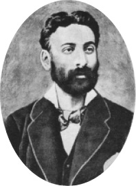
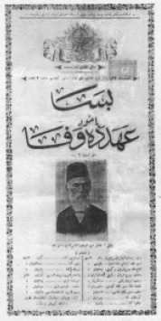
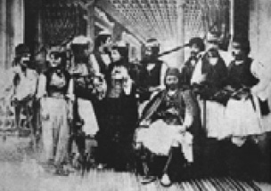
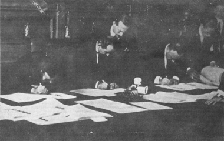
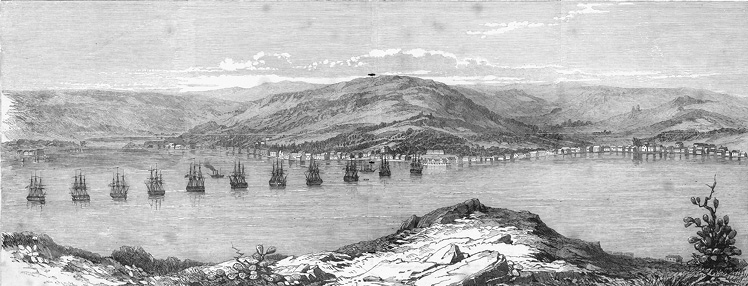
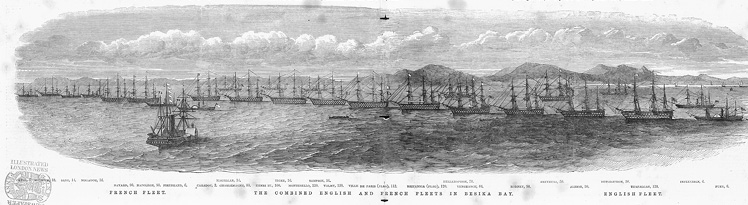
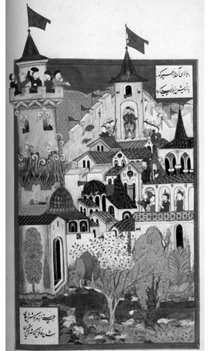

VI
Avrupa ile Geçmişte ve Gelecekte Siyasî Bütünleşme
1963 yılında Ankara Antlaşması ratifiye edildiğinde ve Büyük Millet Meclisi’nin tasdikine sunulduğunda Başbakan İsmet İnönü, kırk yıl evvel Lozan Antlaşması’nı ve müzakerelerini yürüten ve imzalayan devlet adamı olarak, bu oluşumun büyük bir ilerleme olduğunu, beşeriyet tarihi için çok büyük bir anlam ifade ettiğini, Avrupa’nın artık insanlığın bin yıllık değerlerini özümsediğini ve bizim de buna katılacağımızı çok edebî bir dille ifade etmişti. Muhtemelen üslûp kendisinin değildi; Dışişleri’nin çok heveskâr bürokratları, ki bazıları artık rahmete kavuşmuştur, bunu en edebî biçimde kaleme almışlardı. Ama takdir edersiniz ki İsmet Paşa önüne konan evrakı kurmaylığından kalma alışkanlığıyla suhen be suhen (kelimesi kelimesine) tetkik etmeden, tartmadan konuşacak, demeç verecek bir devlet adamı değildi. Ardından büyük bir kıyamet kopmuştu; bu kıyamet, “Onlar ortak, biz pazar, Türkiye kapitalist cephenin pazarı ve hammaddecisi durumuna geliyor, halkımız esir oluyor!” diye atılan, milliyetçi görünümlü sol sloganlardı. Buna karşılık, Dışişleri çevreleri ve Planlama’daki bazı memurlar bunun kaçınılmaz olduğunu, gelişme için çok gerekli olduğunu ileri sürüyorlardı ve ülkede âdeta böyle bir birliğin içine Türkiye giriyormuş, girecekmiş de biz sanki bu işe karar veremezmişiz gibi bir kavga başlamıştı.

Güllü Agop.

“Besa yahut Ahde Vefa” el ilanı.

“Besa”da rol alan Osmanlı Tiyatrosu sanatçıları. Kaynak: Metin And, Osmanlı Tiyatrosu, Ankara, 1999.
Müteakib yıllarda heyetler geliyordu. Bu heyetler gezilere alınıyordu ve 1960’ların Türkiyesi’nde ne kadar büyük farklar olduğu (gelişmekte olmamıza rağmen) çok açık ortaya çıkıyordu. Her şey tenkit konusuydu; nezaket dolayısıyla dinî meseleleri kimse açığa vurmuyordu; ama ben çok iyi hatırlıyorum, çünkü o zaman bu sayısız heyetlere Dışişleri’nin ve Basın-Yayın’ın mihmandarları yetişemediği için, Turizm Bakanlığı ve Dışişleri, Mülkiyeli ve ODTÜ’lü lisan bilen gençleri yardıma çağırıyordu.
En büyük mesele “İslâm” ve “çok karılılık” gibi sorunlardı. Türklerin dini olan İslâmiyet ile Avrupa’nın nasıl bağdaşacağı gibi konuları o zamanki Ortak Pazar Komisyonu’nun üyeleri, uzmanları, ilk Altılar’ın parlamenterleri ciddi ciddi soruyorlardı. Bunlar resmen konuşulmuyordu. Zaten cevap “laiklik” ti. Şurası bir gerçek; muhataplar ülkeyi tanımıyorlardı, tanımaya niyetleri yoktu. Türkiye bir kültürel entegrasyondan geçmek zorundaydı. Tarihî bir konumdaydı, bu kimsenin ilgisini çekmiyordu. Daha doğrusu bunu tartışan yoktu ve Türkiye’nin aydınları bu işi sadece dar bir gruba bırakmışlardı. Bu tartışmayı, o devirdeki zayıf tirajlı ve zayıf bünyeli birkaç İslâmcı gazete ve mecmua gündeme getiriyordu. Sol kesim ekonomik entegrasyon meselesini gayet üstü kapalı, gerekli verilerden uzak bir şekilde toptancı bir görüşle tartışıyordu: “Onlar ortak, biz pazar.” Meseleyi götürenlerin ve tartışması gereken insanların bu konuda hiçbir endişesi yoktu ve çok yanlış bir dünya imajıyla bu işi yürütmeye çalışıyorlardı. Beynelmilel ilişkilerin değişmez motifleri vardır: Bunlardan biri de iktidara tapmadır. İnsan ilişkilerinde de aslında bu böyledir. 1999 Türkiyesi terörü halletmiştir. Bu küçümsenecek bir olay değildir; çünkü dünyada gerilla savaşı dediğimiz düzensiz harple baş edebilecek büyük kuvvet çok azdır.46
Türkiye’deki toplum militarist yapılı olduğu gibi, devleti de tabu olarak görür. Ulusun çoğunluğu devlet denen ilâhî menşeden gelme bir kuvvete inandığı içindir ki, hem maddeten hem manen pahalı savaşları gözünü kırpmadan desteklemektedir. İkincisi, şiddet olarak 1929’u andırmasa da, “kapitalist içtimaî nizam”ın yeni multinasyonal şirketlerinin dünya ekonomisinde yarattığı 1995’lerin krizini Türkiye âdeta şarkı söyleyerek geçmiştir. Her şeye rağmen Türkiye’de bürokrasinin ve toplumsal yapının bu gibi krizler karşısında fazla tınmaması dış dünyayı etkilemektedir. O zaman 1999’un Avrupası Türkiye’ye başka türlü bakmak ihtiyacını hissetmiştir. Bu nedenle sınırsız pazar kapasitesine sahip, sağlam yapılı ülke gözden uzak tutulmamaktadır.
İspanya’da, Sant Andard’da, 1991’de yapılan bir UNESCO toplantısında (toplantının başlığı: “Promotion of Social Science in Europe”; “Avrupa’da Sosyal Bilimlerin Gelişmesi”) içimizde Balkanlar, Rusya, Ukrayna gibi ülkelerden gelen delegeler, bir de alışılmış Avrupalılar artı İsrail ve Türkiye vardı. Bu toplantıda dikkatimi iki olumsuz nokta çekmişti. Madde bir: “Promotion of Social Science” başlığına rağmen tebliğleri dinlediğinizde Avrupa’da gerçek anlamda bir promotion olmadığını ve alışılmış anlamdaki ortalama Avrupa entelektüelinin gerileme kaydettiğini görüyordunuz. Önemli bir nokta; bir Amerikalı lise öğretmeni ile bir Avrupalı lise öğretmeninin, bir Alman, Fransız veya İtalyan hatta İspanyolun aynı düzeyde olmadığını, normal Avrupalı bir vatandaşla –sokaktaki ortalama küçük burjuvayla– bir Amerikan küçük burjuvasının aynı olmadığını, Avrupalıların çok daha fazla gezen, dünyaya açık, duyargaları açık bir toplum olduğunu hepiniz teslim edersiniz; fakat böyle bir toplantıda artık eski Avrupa’nın öldüğünü çok sarih, renkli bir resim olarak da görmüştük.
İkincisi: Salonun beşte biri, eski Sovyet blokundan gelen, İngilizce ve Fransızca bilmeyen delegelerle doluydu ve Birleşmiş Milletler’in çalışma dillerinden biri Rusça olduğu halde, Rusça simültane tercüme yoktu. Beşte bir delegeyi orada âdeta söz haklarını kısıtlayarak, UNESCO çalışma tüzüğüne aykırı biçimde “Amasya bardağı” gibi dizmişlerdi. Büyük Avrupa’dan bahseden insanlar, o gelecekteki Avrupa’nın bilmem kaçta kaç nüfusuna şimdiden daha saygısız ve dışlayıcı (belki de gerçekçi) bir tavır içindeydiler ve nihayet son nokta, son gün patladı. Deus ex machina, sanki gökten indirilmiş gibi, Britanya’nın eski Dışişleri Bakanı Lord Owen getirildi. “El Senyor Owen” salonu tanımıyordu. Bir konuşma yaptı. Herhalde adam böyle koşuşturulup geldiği için acele konuştu. Son oturuma İspanya’nın prensesi başkanlık ediyordu. Geleceğin Avrupa Birliği’ni çizdi; “Bizim, bazı ülkelere karşı ahlâkî borçlarımız var” dedi. Kime karşı? Çeklere karşı. Polonya’ya karşı, zamanında komünizme karşı korumamışlar, Macarlar böyle... Bunun dışında, bu birliğin bundan sonraki üyeleri: Bela-Rusya, Ukrayna, Romanya, Bulgaristan; hepsini saydı.47 Rusya’dan hiç bahsetmedi. Suret-i katiyyede bahsetmedi. Türkiye’den bahsetti: “Size açıkça söyleyebilirim ki Türkiye Avrupa’ya giremez” dedi. Orada söyledi ve ondan sonra indi kürsüden gitti; orada bulunan Bozkurt Güvenç’le önüne çıktık: “Böyle açık söylediğiniz için çok teşekkür ederiz, çünkü meslektaşınız diplomatlar hep oyalıyor bizimkileri” dedik. “Ha öyle mi, siz de İsrail’le işbirliği yapın” dedi. “Onu zaten yapıyoruz, size soracak değiliz” dedik.
Açıkçası, bu dünyanın problemi her daim kültürel de değil tabii. Kültürel olsa, Avrupa kültürünün çok önemli kompartımanlarını inşa eden Rusya’yı bu şekilde dışlamazlar, devamlı dışlıyorlar. Ama sorun bir yerde kültürel, çünkü iktisadî ve hukukî bakımdan bazı birlik üyelerinden, meselâ Yunanistan’dan bile çok daha uyumlu olan bir Türkiye’nin kültürel, tarihî bağlar dolayısıyla dışlanması söz konusu olamazdı. Bu birlik bir muammadır! Büyük bir gürültü ve törenle gidiyor, törenler realitenin önünde yürüyor. Bunların hepsini hesaba katmamız gerekiyor. Bu birliğin başında Almanya yer alıyor, birleşmeden sonra 80 milyonu bulan nüfusu ve diğer Avrupa ve Rusya’daki 2,5 milyonu bulan azınlıkları, artı 7,5 milyonluk Avusturya’sı ile; çünkü Avusturya, Almanya’nın iktisadî bakımdan ayrılmaz bir parçasıdır. Bunu şunun için belirtiyorum: Hitler, “Mesut bir tesadüf, annem beni Almanya sınırında dünyaya getirdi, Alman Avusturya büyük Alman vatanına mutlaka katılmalıdır, iktisadî şartlar buna müsaade etmese bile” demiştir; çünkü o zamanki Avusturya’nın iktisadî şartları Almanya ile birleşmesi için pek gerekli değildi. Bugün ise, siyasî ilhaka zaten ihtiyaç yoktur. Bunlar iktisadî entegrasyon dolayısıyla iki bayrak altında yaşayan bir vatan haline gelmişlerdir. Ama genellikle Avrupa Birliği’nin içinde müthiş iktisadî ve kültürel farklılıklar vardır. En basiti, alt yapısını, komünikasyon ve transportu sağlayamayan bir Yunanistan’la, bunu çoktan temin eden İskandinav ülkeleri, Norveç hariç, Danimarka, İsveç ve Finlandiya bu birliğin içindedir. Çek Cumhuriyeti, Polonya ve Macaristan AB’ye girdi. Polonya’nın işsizler ordusu umulan sayının çok üstünde İngiltere, Almanya ve Fransa’yı doldurdu. Çekya Euromoney uygulamasını geciktiriyor, Macaristan’ın ise uygulamaya alınması geciktiriliyor. Romanya ve Bulgaristan yeni alındı; serbest dolaşım ve diğer uygulamalar ince hesap konusu yapılmış değil ama, Almanya’nın siyasî, kültürel nüfuz alanı olmaları gerçeği, hepsinin önüne geçiyor.
Bu birliğin içinde, daha tehlikelisi, etnik, ırkî hiçbir çatışması, problemi olmayan ülkelerle, bunu derece derece yaşayanlar bir aradadır. Belçika gibi iki temel unsurun kansız çatışmasını, hem de ciddi ve onulmaz biçimde yaşayan bir ülkeyle, İspanya gibi bu terörist krizi nasıl götüreceği, çözeceği belli olmayanlar da bir yerdedir. Çok uzun bir zaman insanlar, Bask modelinden bahsettiler. Bask modelini Türkiye’de öneren birkaç kişiyi tanıyorum. Bu zevatın ne İspanya’yı ne de Baskları tanıdıkları kanaatinde değilim; çünkü Bask dediğiniz adamın bizdeki etnik çatışma ve gerilim modeline önerilmesi için gözden geçirilmesi gerekir. Basklar, nüfusu artmayan, eğitimi son derece yüksek ve 1920’li, hatta 1910’lu yıllardan itibaren İspanya’nın sanayi bölgesini teşkil eden bir gruptur. Bugün dahi İspanya’da Bask demek; televizyonda, yayıncılıkta, show business’ta, yeni gelişen sibernetik toplum şartlarında öncülüğü olan insanlar demektir. Kaldı ki modelin her zaman çok iyi yürümediği son olaylardan da gene anlaşılmıştır.
Bütün bunlara rağmen Türkiye’de bazı grupların Avrupa meselesini ele aldıklarında ne Avrupa’yı, ne de Türkiye’nin iktisadî, içtimaî, tarihî bünyesini yeterince ele almadıklarını söyleyebiliriz. Burada bütün mesele Avrupa’nın iyi incelenmemesine dayanmaktadır, Avrupa iyi incelenmelidir. Oysa, üniversitelerinde Avrupa kültürü ve toplumları hakkındaki eğitimi sadece aktarma edebiyatçılık ve gramer öğretimine dayanan bir memlekette bunun yapılmadığı çok açıktır; bu ülkelerin tarihi incelenmez, bunların tarihleri hakkında doğru dürüst tercüme bile yapılmaz, bu ülkelerin hukukî-iktisadî yapısı incelenmez. Bu iktisadî yapıların bizimkiyle olan sorunları da ele alınmalıdır. Bu ülkelerin hukukî yapılarını hemen hemen hiç bilmeyiz. Üniversitelerimizde Almanca, Fransızca, İtalyanca bilenler olduğu halde bu dalları inceleyen uzmanlar ve enstitüler kurulmamıştır. Nihayet, bu ülkelerdeki değişimler farklı kompartımanlarda ele alınmamaktadır ve meselâ Türkiye, Protestanlık üzerine en gülünç bilgilere rastlanan bir yerdir. Okul kitaplarını açıp bakınız. İncil’i Luther’in çevirdiği söyleniyor! Luther’e gelinceye kadar İncil kaç kere çevrilmiş, bundan kimsenin haberi yok ve asıl mesele İncil’in ilk defa geç antikitede (yani 4.-5. asırlar) yapılan tercümelerindeki yanlışlıklardır. Onları düzelten asıl tercümeden, Rotterdamlı Erasmus’tan kimse söz etmez. Nihayet, Protestanlık bu memlekette ileri, açık fikirli, reforme edilmiş bir din olarak tanıtılır. Katolikleri bırakın, aklı başında protestanlar bile bu lâfa gülerler. Dinde reform Batı dünyasında protestanlığın tekelinde değildir, Katolik dünyada da reform daha eskiden başlamıştır. Dolayısıyla biz bu dünyanın en önemli yönleri üzerinde de tam bir fikir sahibi değiliz.
Birleşmenin bazı sorunları da vardır. Türkiye dinamik yapılı bir toplumdur. Komşu olduğumuz Avrupa Birliği toplumlarında nüfus artışı azalıyor: Bizde de, Batı Anadolu bölgesinde o derecede olmamasına rağmen nüfus artık eksi artıştadır. Bazı bölgelerde dengede duruyor, Doğu Anadolu’da da çok yakında azalacak; yani demografların ölçüm ve öngörüleri bu merkezdedir, ama şimdilik sosyologları şaşırtan bir artış gözleniyor. Her şeye rağmen Doğu Avrupa bölgesinde en dinamik nüfusa sahibiz. 2030’lu yıllarda Türkiye, doğum oranı düşmüş; fakat dinamik bir genç nüfusa sahip bir ülke olacaktır. Bunun eğitilmesi ve üretimde kullanılması başlı başına bir sorundur, ama bu ülkeye en büyük üstünlüğü sağlayan bu zenginliktir. Altını çizelim: En büyük üstünlüğü, potansiyeli sağlayan bu zenginliktir. Komşularda bu yoktur. Hiç kimse şimdiden nüfusunun üçte ikisi elli yaşın üstüne çıkmış Avusturya ile, bunun benzeri Macaristan’la nasıl bir birleşmeye gidebileceğimizi, bu birleşmede ne gibi fedakârlıklara katlanmamız gerektiğini hesaplamamaktadır. Dahası, eğer tasavvurlar gerçekleşecek olursa –ki Almanya “Büyük Reich” politikasıyla ister istemez buna gitmektedir– Romanya gibi, Ukrayna gibi AB ile müzakereleri devam eden ülkeler birliğe alındığına göre; bizim bunlarla da nasıl bir arada yaşayacağımızı kimse düşünmemektedir. İnsanlar bazı şeyleri ezbere konuşmaktadır; Doğu Avrupa gibi nüfusu artmayan, yaşlı ve üretim kapasitesi düşük ülkelerle bir birlik içinde yaşamayı tasavvur edemeyiz. Türkiye bunu kaldıramaz. Bu ne kültürel ne iktisadî ve ne de üretim bakımından mümkündür. Bu, Almanya’nın Orta ve Doğu Avrupa’daki büyük etkisi ile izah edilecek ters bir gelişmedir.
En önemli unsur, Avrupa eğitiminin mazideki birikimle geçinmesidir. Reprodüksiyon, yeniden üretim denen olayın burada gerilemesidir. Genellikle Avrupa üniversiteleri, Birleşik Amerika üniversiteleriyle, bir kısım Anglosakson, Britanya üniversiteleriyle, hele hele İsrail ve Japon üniversiteleriyle kıyas kabul etmez derecede malî sıkıntılar içindedir, fizikî çözüntü içindedir; problemlerle karşı karşıyadır. Genel nüfus azalmasına rağmen, üniversitelere yeni gelen gençlerin sayısı artıyor, talebeler son derece kalabalıktır. Öğretim kadrolarında da sık sık tensikata gidilmekte ve yerine yenileri ihdas edilmemektedir. Şunu dehşetle fark edersiniz: Avrupa bir kütüphaneler ülkesi değildir; yani Birleşik Devletler’deki, Japonya’daki ve İsrail’deki kütüphane hizmetleri, kütüphane kullanımı –ki enformasyon toplumu diye sık sık konuşuyoruz– buralarda mümkün değildir. Avrupa’nın büyük kütüphaneleri kitap müzeleridir. Tıpkı bir arşiv gibidir, kitap müzelerinde insanların ve hele yetişen gençliğin gerçek anlamda verimli araştırma alışkanlığı elde etmesi mümkün değildir. Tabiatıyla arkada derin kültürel miras vardır, anane vardır. Meselâ, sekiz bin talebeli bir Germanistik vardır Berlin’de, siz Türkoloji’de sekiz bin talebe kayıtlı olduğunu düşünebiliyor musunuz? Korkunç bir görünümdür! Ama öte yandan, Alman üniversitelerinde Germanistik bölümünden iki kişi çıksa idare eder. Meselâ, Germanistik okuyan bir öğrencinin veya öğrenciler kitlesinin çok fazla şey yapması gerekli değildir, çünkü bu bilimin temel unsurları çoktan atılmıştır; yani artık ne Alman etimoloji lûgatına, ne diyalektolojiye, ne edebiyat tarihine çok büyük ölçüde lüzum yoktur. Lûgatlar ortadadır, gramerler tamamlanmıştır, lehçe tetkikleri yapılmıştır. Bizim gibi henüz dil ve edebiyat tarihini inşa safhasında değildirler; onun için durumu idare etmektedirler.

İsmet Paşa Lozan Barış Antlaşması’nı imzalarken, 24 Temmuz 1923.
Birtakım dallarda ise eğitimdeki kalitesizlik su yüzüne çıkmaktadır ve bunu maalesef çok zengin yapılı İskandinav ve Alman üniversitelerinde de görmek mümkündür. Lise eğitimi gittikçe kalitesini kaybetmektedir ve bu yapıdaki ülkelerle bizim eğitimde bir birliğe doğru gitmemiz, bizim gelişme planlarımız ve imkânlarımız açısından mümkün görülmemektedir. Buna karşılık, Türkiye’nin Avrupa ile entegrasyonunda avantajlar da vardır. Bunlardan biri Asya’ya açılan, bir sanayi patlamasına giden Türkiye’nin hem Ortadoğu’da, hem de Avrupa’da çok kolay bir pazar yaratabileceği, yarattığı bu pazarın yanında da birtakım hammadde ve emek unsurlarını, kalifiye unsurları birleştirebileceği gerçeğidir. Yalnız bu keyfiyetin hiç şüphe yok ki sanayiciler ve işadamları tarafından çok ince bir şekilde hesaplanması lâzımdır. Oysa Türk sanayii bu gibi konularda araştırma yapmaz, plan-program bilmez ve vizyonu yoktur; yani bir memlekette, bir zümrenin şu saçmalığa hakkı yoktur: Bir politikacının arkasına takılırlar evvelâ, “Biz girelim Gümrük Birliği’ne” diye gürültü yaparlar. Avrupa ile pazarlık gücünü kaybedersin, girdikten sonra da, “Biz neleri kaybettik!” diye sızlanmaya başlarsın. Bunu meselâ oyuncakçılar yaptılar, tekstil sanayiinde aynı şikâyetleri duyuyorsunuz. Peki ama, kendi zamansız ve belirsiz taleplerinizle ve gürültünüzle pazarlık gücünü kaybederek bir ülkeyi bir yere götürüyorsunuz ve ondan sonra sızlanmaya başlıyorsunuz. Bu ciddi bir tutum değildir. Böyle bir dönemecin içinde Türkiye sanayiinin her şeyden evvel hesap-kitap yapması, vizyon geliştirmesi, araştırma yapması gerekir ki bu bizde noksandır.
Bundan başka, siyasî ve kültürel literatürümüzde bir unsur daha vardır: Avrupa ile tarihte görmediğimiz bir yere adım atacağımız üzerinde konuşulmaktadır. Bu çok yanlıştır. İşte bunun üzerinde durmak istiyoruz. Türkiye Avrupa’ya ilk defa yanaşmıyor. Türkiye Avrupa ile ilk defa bir macera yaşamıyor. Türkiye’nin dokuz yüz yıllık tarihi Avrupa ile beraberdir; bunu kimse unutmasın. Ülkemizin adını da “Turchia veya Turcmenia” diye Avrupalı İtalyanlar koymuştur. İlk ticarî organizasyonlarımız Avrupa ile olan yakınlaşma sayesindedir. Devlet teşkilâtımızda ve askerî yapımızda ister istemez Avrupa’ya reaksiyon, etki-tepki şeklinde biçimlenmeler meydana gelmiştir ve Türkiye demek zaten “Avrupa dünyasının ortasındaki İslâm” demektir; yani Türkiye’nin dokuz yüz senelik tarihî yolculuğu budur. Kendini ona göre yenilemiştir, ona göre şekillenmiştir ve bunun son yüz elli senesinde de Türkiye, Avrupa’nın üyesidir. Herkesin bildiği gibi Kırım Savaşı’na Avrupalılar gelmişlerdir, imparatorluğu kuzeydeki düşmana karşı savunmak için bizimle birlikte savaşmış, ölmüşlerdir. Bu tabii, bir ruhî yakınlık da meydana getirmiştir. Kırım Savaşı’ndan söz ediyorum. Bir sürü genç İtalyan - Piemonte’li, Fransız, İngiliz geliyor gemilerle, gidiyor Kırım’a ve dönmüyor bir daha, veyahut sakat olarak dönüyor. Bu da tabii insanların gönlünde “gâvur”a karşı bir yumuşama meydana getirmiştir ve onun arkasından o dünya ile hukukî-kültürel bir bütünlüğe gitmişizdir. Daha da önemlisi, 1856 Paris Antlaşması’nda oluşan Avrupa Konserti’nden beri biz o dünyanın hukuken bir üyesiyiz. Önemli bir şeydir ve 1699 Karlofça Antlaşması’ndan beri de biz o dünyanın diplomatik normlarına, devletlerarası ilişkilerine, sırf diplomatik düzeyde değil, ticaret ve seyrüsefer konusundaki normlarına da kendimizi uyumlamışız ki bu çok uzun ve önemli bir gelişmedir. Ama bu keyfiyet imparatorluğun parçalanmasını ve Balkanlaştırma olayını önlememiştir.
Çünkü hepinizin bildiği gibi 1699 Karlofça Antlaşması temelde Hıristiyan ve Müslüman devletler arasında değil, Hugo Grotius’un Westphalia Antlaşması’ndaki Romanist hukuk prensiplerini kabul eden bir camia arasında varılmış bir antlaşmadır; yani orada Grotius’un normları Hıristiyan veya İslâmî değil, doğrudan doğruya Roma hukukunun laik prensipleridir ve bunların etrafındaki üniversal prensipler, müesseseler, uzlaşmalar sistemi yürürlüğe girmiştir ve o andan itibaren de Türklerin imparatorluğu Avrupalılarla bir karşılıklı müesseseleşme içindedir ki, bu çok önemlidir; ilişki değil, müesseseleşme söz konusudur. İlk defadır ki tek taraflı verilen ahitnameler artık bir muahede halini almakta, bir akit fikriyle kaleme alınmaktadır. İlk defadır ki bu memlekete gelen diplomat ve tüccarlar tek taraflı inayetle değil; karşılıklı akde dayanan bir eylemle burada bulunmaktadırlar. Tüccarın malı ve ticarî güvenliği bir anlaşma, bir kontrat altındadır. Diplomatın nasıl yaşayacağı, nerede oturacağı, ne yiyeceği ve ne gibi muafiyetleri olacağı bir ticarî akit konusu haline gelmektedir. Bu önemli açılımdır ve 18. asırdan itibaren bu memleket hukuken bu birliğin içindedir ve Türkiye’nin Avrupa ile bir birlik içinde bulunması fikri de yeni bir olay değildir, ta Rönesans’tan beri tartışılmaktadır.
Rönesans’tan beri Avrupa düşüncesi, “Türkleri bu birliğin içine alalım mı, almayalım mı, alırsak nereye koyalım?” motifi etrafında dönmektedir. Öyle projeler vardır ki Papalıkla Türk sultanını bu birliğin birlikte başkanı olarak tayin etmektedir, bu çok önemli bir keyfiyet. Sulhun temini için bunu 16. asrın düşüncesinde dahi görmek mümkündür. Gelişmelere bir başka yönden de bakmak durumundayız. Türkiye 19. yüzyılda yaptığı hukuk reformlarıyla; yani önce ticaret sahasında, bilahare idare hukuku dediğimiz külliyat içerisinde ve dış ilişkilerde de devletler hukuku alanında yaptığı reformlarla Avrupa’ya yanaşmıştır, aslında Romanist sistemin içine girmiştir ve 1926’da Medenî Kanun’un kabulüyle Türk hukuk sisteminin Romanizasyon süreci tamamlanmıştır. 1970’lere kadar Türkiye, meselâ Yunanistan’dan daha çok Romanize olmuştu ve Avrupa hukukunun içindeydi, eğer Papandreu’nun çok gürültü koparan reformları olmasa idi (o dönemde mecburen Avrupa’ya da girmişlerdi) bu fark el’an devam edecekti. Bununla birlikte Türkiye’nin toplum hayatında daha açık ve Batı’ya yönelik bir ideolojiyi benimsemesi, dolayısıyla da bir yakınlaşma söz konusudur; ama şunu da unutmamak gerekir ki İskandinav ve Germen ülkeleriyle bizim istenen ölçüde bir uyuma girmemiz asla mümkün değildir, bunun üzerinde insanların düşünmesi lâzım; çünkü bugün İskandinavlar etnik sorunları olmayan bir ülkeler bütünü durumundadır; yani bunlar eski bildiğimiz Vikinglerdir. Eski krallık parçalandıktan sonra Macaristan için böyle bir şey söz konusu değildir, Çekler için değildir, Polonyalılar için değildir; fakat özellikle İskandinav ülkeleri ve Macaristan beynelmilel platformda azınlıklar ve etnik problemler sorununu en çok öne çıkaran devletlerdir; çünkü kendilerinin böyle bir problemi yoktur. Rahatça bunun şampiyonluğunu yapıyorlar ve hassaten İskandinav ülkeleri bu konuda çok aşırı bir yorumla öncülük elde etmek istiyorlar. Oysa kendileri de bu alanda bazı sorunlarını çözemediler. Danimarkalılara “Doğu Frizyalılarla sorununuz nedir?” diye sorarsanız, soruyu hasıraltı ediyor ve ondan sonra Güney Amerika’dan, Güneydoğu Asya’ya kadar her yerdeki etnik problemleri en çok gündeme getiren ülke rolüne devam ediyor.
Bunların yanı başında, bu ülkelerdeki hukukî yapıya, Aile Hukuku’ndaki değişmelere ne Batı Avrupa, ne Güney Avrupa ülkelerinin ne de Türkiye’nin ilk anda uyum sağlaması mümkündür. Öte taraftan şurası çok açıktır ki karşımızdaki Avrupa dünyası henüz bir dünya değildir. Binaenaleyh bir birliğe girerken bunları da hesaba katmak durumundayız. Bu dünyanın içinde henüz malî birlik sağlanamamıştır. Maastricht’in öngördüğü müstakil müşterek bir Merkez Bankası, Maastricht’in öngördüğü bölgeler arasında himayenin tamamen kalkması ve sektörlerin tamamen serbest ticaret kurallarına açık bir şekilde yaşaması sorunu çözülebilecek gibi değildir.
Bugünkü İspanya’nın, bugünkü Fransa’nın, bugünkü İtalya’nın ziraî alandaki sorunlarıyla, talepleriyle Maastricht bünyesinin bağdaşması mümkün değildir ve inşallah da olmaz! Yani siz bütün bir zeytin üretiminin ve buna bağlı sanayinin çöktüğü bir İspanya ve İtalya düşünün, bunu onlar değil ben bile tasavvur etmek istemiyorum; yani bu dünyanın bir rengi, bir lezzeti kaybolur. Meselâ, gene aynı şekilde Yunanistan gibi henüz ekonomisini denkleştirememiş, kamu masraflarını ayarlayamamış, enflasyonist politikaların baskılarını ortadan kaldıramamış bir ülkenin Portekiz’le birlikte Maastricht bünyesinde velev bulunsalar dahi yaşamaları mümkün değildir. Nitekim aynı şey İngiltere için de geçerli olduğu için “Bu yürümeyecek” dendi ve girilmedi. O zaman ortada şöyle bir sorun vardır: Aslında tarihî bakımdan geç antikiteden beri oluşan bir Avrupa vardır ve bu Avrupa’nın oluşmasında iki önemli heyet, iki unsur söz konusudur: Birisi doğrudan doğruya Papalıktır; çünkü o zaman tamamen Katolik bir Avrupa dünyası söz konusuydu; ikincisi, İspanya’nın kuzeyinden başlayan Charlemagne imparatorluğuydu. Çünkü Avrupa’nın güneyi Endülüslü Arapların elindeydi. İmparatorluk İtalya’nın, Fransa’nın, bugünkü Almanya’nın, Macaristan’a kadar, bütün Polonya’ya kadar, bütün Bohemya arazisinin kontrolünü elinde tutuyor, belirli bir hiyerarşiyle idareyi kuruyordu ve bu dünyadaki anlaşma dili Roma’nın mirası olan Latince idi. Zira Roma İmparatorluğu’nun Asya kesiminde Latince yaşamamıştır; Yunanca yaşar. Hellenizm ortak anlaşma görevini yüklenmiştir; ama tabii Hellenizmin yanında öbür eski kültürler çok kuvvetli olduğu için Sami diller, Sami kültürler ve Ermenice gibi Aryen diller, Aryen kültürler de yaşıyordu. Hellenizm ortak anlaşma dili olmanın ötesinde yoğunluk olarak o derecede hâkim bir unsur değildi. Halbuki Avrupa’nın bu kesiminde kabile yaşamında barbarlığın üstünde Latinler büyük bir kültürel birleştiricilik rolü oynamıştır; yani daha doğrusu bu kavimler Roma’nın fetihleri sayesinde tarih sahnesine çıkmıştır; ondan evvelki tarihleri kayıtlı değildir. Açık bir şeydir ki hukukî yapıları bununla oluşmuştur ve dinlerini tabii bu medeniyete borçludurlar. Bu birlik dolayısıyla bir Avrupa’dan zaten söz etmek mümkündür ve bu Avrupa değişik zamanlarda ortaya çıkmıştır. İlk defa 1956 ve 1960’la; yani Ade-
nauer ve Charles de Gaulle’ün bir araya gelmesiyle değil, değişik zamanlarda bu birlikten söz etmek mümkündür; bunun ideolojisi de mühim değildir. Fransız İhtilâli’nden sonra Napolyon Avrupa’yı birleştirmek istemiş, kısmen de birleştirmiştir; yani bir Avrupa medeniyeti safhası kurmuştur. Ondan evvelki Avrupa neydi? Ondan evvelki Avrupa, Fransa’nın Avrupası idi. Voltaire XIV. Louis Asrı adlı eserinde çok açık şekilde söylüyor: “Bundan sonra bütün Avrupa Fransız medeniyetini takip edecek.”48
Öyle oldu; çünkü okumuş insanlar Fransızcayı kendi dillerinden iyi biliyorlar. Prusya Kralı Friedrich’in Almancası son derece berbattır. Almanların kralı olduğu halde, meselâ askerlerin karşısına çıkıp sert direktifler vermek dışında bütün yazdıkları Fransızcadır. Meselâ Alman İmparatoru Şarlken (V. Karl) hiç Almanca bilmiyor; Saksonya elektörü Friedrich, onun uzaktan dayısıdır, amca-dayı arasında hiç Almanca yok. İspanyolcası çok iyi, Fransızcası çok iyi ve o zamanki Avrupa’nın dilleri bunlar, zaten o dönemin İspanyası bir kültürel birleştirme rolü oynuyor, ondan sonra Fransa bunu ele alıyor.
Napolyon’un getirdiği bir Avrupa fikri var ve bir Avrupa oluşumu var; Napolyon öldü, o kuvvet dağıldı; ama bu fikir ölmedi, kıyafetine modasına kadar devam etti ve Avrupa Birliği’nden söz eden ve bunu kısmen gerçekleştiren ilginçtir, Nazilerdir. Fransa ile Almanya’nın ilk birliği de Gaulle ile Adenauer’ın değildir, Hitler’le Mareşal Pétain’indir. Yani çok açık bir şekilde Fransa ve Almanya’nın bir Avrupa’nın, Charlemagne’ın çocukları oldukları, onlara yabancı bünyenin, Anglosakson maymunlar olduğu (“ada maymunları” derlerdi onlara), bu birliğin içinde Latinlerin de İtalyanlar dolayısıyla yerini aldığı, Slavların tıpkı bugün itiraf etmeden söylendiği gibi geri ve aşağılık ırklar olduğu, madenlerde çalışmaları gerektiği de o zaman ifade ediliyordu ve bu tarafı bizde hiç öğretilmez; hiçbir zaman ele alınmaz. Hitler Devrindeki Avrupa’nın; yani Fransa ve Almanya ile bu Benelüks dediğimiz bölgenin Avrupa düşüncesinde bugünkü Avrupa Birliği’nin beceremediği kadar önemli işleri vardır. Bunlardan biri, muhasebe sistemlerinin aynîleştirilmesidir; yani Alman işgali Fransa’ya mütekâmil ve standardize edilmiş bir muhasebe ve bütçe sistemi bırakarak gitmiştir, bunu bugün daha yapmaya çalışıyorlar ama, şimdi asrın icabından olarak Amerikan işletme yöntemleri hâkim. Bu yöntemleri de çok ustalıkla getirebildikleri şüphelidir.
Birtakım teknik konularda işbirliği ve ideoloji süratle geliştirilmiştir; Avrupa’yı Bolşevizm’den korumak başta gelir. Çünkü Bolşevizm iptidaî Slavlıkla (!) aynı gösterilmiştir, dolayısıyla onun karşısındaki ideolojiye dayanan, ortak üretime dayanan, ortak işletme metotlarıyla tekâmül ettirilen ortak tarih ve ideolojiye dayanan bir Avrupalılık o zaman da söz konusudur. Faşistler de bunu yapıyor ve nihayet 1950’lerden sonra bunu o zamanki bildiğimiz soğuk savaş şartları içinde kendisine hür Avrupa diyen grup yapıyor, bunun öncüleri de sosyal demokrat partilerden önce muhafazakâr partilerdir; yani Adenauer, de Gaulle ve İtalya’daki Hıristiyan Demokratlardır, işin öncülüğünü onlar yapmışlar, onlar götürmüşlerdir ve çok önemli birtakım hususlar o zaman halledilmiştir. Ama bunun dışında getirilen teklifler, bazen havanda su dövmek kabilindendir.
Meselâ bir örnek verelim: Avrupa’nın bir kültürel ilmî birlik olduğu, çocukların aynı dünyada eğitileceği gibi bir zehaba kapıldılar ve biliyorsunuz “Erasmus Programı”nı geliştirdiler. Son derece büyük bir hayal bu; meselâ bir Alman genci önce Nürnberg’de, Köln’de vs eğitime başlayacak, oradan ortaçağ talebeleri gibi (hani “her şeyimi yanımda taşıyorum”, “Omnea mea mecum porta” deyip, her an, bir kat çamaşır, cübbe ve lûgatiyle gezen talebeler gibi) Viyana’ya gidecek, Viyana’dan Roma’ya sarkacak, ondan sonra dönecek Paris’te okuyacak; nihayet Rotterdam’dan mezun olacak. Tabii Avrupalı olarak... Bütün Avrupa onun vatanı, bütün dilleri biliyor. Bu, hayalî bir öğrenci olarak kalır. Bu program hiç yürümüyor; öyle istemekle olmuyor, bunun için çok ciddi programlar lâzım, rafine bir üniversite sistemi lâzım, rafine bir kütüphanecilik lâzım, rafine bir altyapı kurmak lâzım ve eski Avrupa liseleri lâzım...
Şurası bir gerçek: 1899’un Fransası dünyaya hükmediyordu. O zamanki Fransa’nın düşünürleri, matematikçileri her yerde takip ediliyordu. Bugünkü Fransa, aynı rol ve yoğunluğa sahip değil. Bugünkü Almanya düzgün bir endüstri yürütebiliyor; ama artık o bir asır evvelinin mühendisler, mucidler, yaratıcılar sanayii değil. Bu sadece iyi, belirli standardı tutturan bir sanayi ve yüz sene sonra ne olacağını bilmiyorsunuz. Devrimiz madem enformatik toplumuymuş, madem bilgisayar çağıymış kim üretiyor bu kadar şeyi? Herhalde Fransızlar, Almanlar ve İtalyanlar değil, çok açık bir şey. Artık teknolojik bakımdan öncü değil, izleyici toplumlarla karşı karşıyayız. Bu izleyici toplumla iktisadî alışverişimiz ön plandadır; yani en büyük partnerimiz Almanya’dır. Ardından Amerika, İtalya geliyor. Şüphesiz ki Türkiye’nin hiçbir şekilde bu birliğin dışında kalması, bilhassa iktisadî bakımdan düşünülemez. İktisadî bakımdan iç içe olduğumuz bir bünye ile hukukî bakımdan da kendimizi devamlı uyum içinde tutmak zorundayız. Bu, Türkiye’nin bugün için zayıf bir tarafı; yani Avrupa hukukunu bilmiyoruz; ama öğreneceğiz. Öte yandan kültürel açıdan bazı şeylere dikkat etmemiz gerekir. Bünyesine girmek istediğimiz dünya eğitimde gerilemektedir, hatta artık geridir. Tabii bir üçüncü dünya ülkesi, yani UNESCO’nun yardım programlarına ihtiyacı olan bir ülke ve dünya bölümü değildir; ama bu toplum kendisini üretememektedir. Yani bunların hem Amerika’da ve İsrail’de olduğu gibi genç nüfusu yoktur, hem de genç nüfusunu en iyi şekilde eğitememektedir. Bu bakımdan, hassaten bu noktada, Türkiye’nin kendisini bu dünyadan uzak tutması, başka yönlere bakması, başka programları takip etmesi gerekir.
Maalesef kendini üretemeyen bu dünya, gençliğine de sahip çıkamamaktadır, bizim için en önemli hususlardan birisi zannediyorum budur. Bunun dışında bazı noktalarda Türkiye bu ülkelerin teknolojik olarak gerisinde olduğu gibi bazılarının da önündedir ve önüne geçeceği de tartışılmaz. Şunu herkes çok açıkça söyler ve bilir: Bugün bu memleketteki mühendislik birçok Avrupa ülkesinin önündedir, buradaki mühendisin yaratıcı kapasitesi, örgütlenmesi ve icraatı birçok Avrupa ülkesinin önündedir, bunun örnekleri bilinmektedir. Bu meselâ tıp için de böyledir; “Hastaneye gittim de ameliyat olurken mikrop kaptım, az kalsın ölüyordum” gibi şikâyetlerde bulunmayalım, bu memleketteki belirgin araştırmalar ve uzman yetiştirme kapasitesi, öğrenimi ve akademik kadrolar yönünden öndedir. Bu ülkede birtakım dallarda, ziraî teknolojide atılımlar yapılmaktadır, bu çok önemli bir yapısal zenginliktir Türkiye için. Ama hiç şüphesiz çok geri olduğumuz dallar da vardır. Bunların en başında –bir Avrupa bünyesine intibak etmek istiyorsak bizim bu dallardan söz etmemiz gerekiyor– hukuk, filoloji ve tarih gelir. Maalesef zamanımızın Türk toplumu ve Türk entelijensiyası, bu dallarda Avrupa’ya entegre olup da onlarla yarışacak kapasitede değildir. Açığı süratle kapatmamız gerekiyor ve bu kapanabilir. Bunlar nasıl gerçekleşebilecektir, bunların üzerinde durulması herhalde en önemli unsuru meydana getirmektedir.
Bütün bunların dışında bir konunun önemine işaret etmek istiyorum. Çok uzun bir zamandır, “Türklerin Müslüman olduğu, Avrupa’nın o yüzden Türkleri dışladığı” gibi sloganlar tekrarlanagelir. Bu sloganlar özellikle Avrupa’yı tanımayan muhafazakâr çevrelerde tekrarlanageldiği için bıktırmaya başlamıştır. Bilir bilmez her şeyde Türk düşmanlığı aranması sağlıklı düşünmeyi de önlüyor. Şimdi gerçek ne budur, ne de öbürüdür. Gerçek ikisinin ortasındadır. Tarihi itibariyle Avrupa dünyasının tanıdığı Müslüman kuvvet ve Müslüman dünya Türklerdir; çünkü İspanya’daki Endülüs hâkimiyeti uzak mazide kaldı; toplumun millî devlet şuuruna ulaştığı safhada İspanya çoktan Araplardan ve Yahudilerden arındırılmıştı; ama tam o çağda Avrupa’nın ortalarına kadar giden, devamlı bir tehdit oluşturan ve o dünyada oturakalan Osmanlılardır, Türklerdir. Dolayısıyla Türk İslâmlığı dediğimiz zaman Avrupa’nın gözünde militan, fetihçi, kavgacı bir İslâm canlanmaktadır; yani İranlı dediğiniz zaman görüntü, nefis İran şiiri çevirileridir, Hayyam’dır. Araplar dediğiniz zaman da geometridir, matematiktir vs… Ortaçağın Binbir Gece Masalları ve Kur’an bilinmektedir. Arapça hoş bir dildir. Avrupa oryantalizmi bir nebze olsun bu insanları tanıtmıştır, olumsuz yönleri de çok fazla kimseyi rahatsız etmez. Deve, harem gibi imajlar basit halk için hoştur; fakat Türk demek başka bir şeydir ve bu militan davranışlı, bu fetihçi, bu yıkıcı (!) ama aynı zamanda bu idareci, kalıcı zümre Avrupa’nın imajından kolay kolay silinmez, bu konuların ele alınması hiçbir şekilde basit bir milliyetçilik ve xénophobie (yabancı düşmanlığı) değildir, bu açık bir problemdir, bunun üzerinde durmak lâzım. Bu dönemin bıraktığı bir miras var ki bu Avrupa’yı meşgul etmektedir, yani Tuna ve bir Bosna vardır, Balkanlar’da Arnavutluk vardır, Bulgaristan’da önemli bir Türk ve Müslüman nüfus vardır. Her zaman için kendimizi başkasının yerine koyarak düşünmeliyiz; yani Bulgar devlet adamı olsak, Bulgar profesör olsak bu sorunlara nasıl bakarız? Bu çok önemli; bir milyon Türk var Bulgaristan’da ve bu Türklerin öyle sizinle bütünleşmeye, karışmaya falan da pek niyetleri yok. Hâlâ evlenirken, kız alıp verirken düşünüyorlar, çok az karma evlilik var. Meselâ: Aynı İstanbul’daki Rumlarda olduğu gibi eski imparatorlukta yaşıyorlar, kendilerine göre sloganları var. Bosna aynı. Meselâ, çok önemli bir keyfiyet: Laiklik gelmiş, Bosnalılıktan vazgeçmemiş. Aynı dili konuşuyorlar Sırpla, ama ruh ve yapıları tamamıyla farklı. Bir yerde bütün bunlar çok düşündürücü unsurlar ve nihayet unutmayalım ki Almanya’da entegre olamamış kalabalık bir proletarya var. Entegre olmaya da niyeti yok. Bu çok önemli, korkutucu bir unsurdur. Kendinizi o Almanın yerine koyun; karşısında entegre olmamış, olmaya da niyeti olmayan kalabalık bir proletarya bulunuyor. Tabii Almanın da bütünleşmeye niyeti yok. Problemler problemleri kovalayarak gelişiyor ve bunların hepsini birlikte dikkate almak zorundayız. İyi niyetle ve belirli bir söylemle bunu çözmemiz mümkün değil. “Avrupalı olacağız, hepsi de halledilecek” saçmalığı var. Niye halledilsin? Onun için bunların üzerinde durmamız gerekiyor.

Yukarıda- Yaklaşmakta olan Kırım Savaşı öncesinde Büyükdere koyuna demirlemiş durumdaki Osmanlı donanması.

Aşağıda- Çanakkale Boğazı’nın girişine yakın bir yerde, Beşik Koyu’ndaki İngiliz-Fransız müttefik donanması.
Kaynak: The Illustrated London News, 9 Temmuz 1853 (Ayşe Yetişkin Kubilay arşivi).
Şimdi burada bir doküman vererek meseleyi kapatmak istiyorum. Bir okul ansiklopedisinde (Musisches Lexicon) Firdevsî “İranlı şair” maddesine bakıyorsunuz. Okul ansiklopedisi şöyle bir hata ile işe giriyor: 654’te “Türkler İran’ı fethedip İslâmlaştırdıktan sonra, Farsça tamamıyla unutuluyordu. Firdevsî bu dili diriltti.” Firdevsî gerçekten o dili diriltti; ama 654’te orayı fetheden Türkler değil ve oraya İslâmizasyonu getiren de Türkler değil, o tarihte haberleri bile yok İslâmlıktan. Bu vahim hatayı okul ansiklopedisi nasıl yapıyor? Çok açık bir şey; çünkü bir yeri fethedip İslâmize etmek Türkler gibi belâlı (!) adamların işidir! Almanya’da ve Orta Avrupa’da imaj budur, bunun kolay kolay değişmesi mümkün değildir. Maalesef memlekette seçkin tabakanın insanları kendilerini orta, alt orta sınıfların ve ayak takımının yerine koyarak düşünme alışkanlığını elde edememişler; yani diplomatımız diplomatça konuşuyor; çünkü tanıdığı Avrupalı diplomat arkadaşlarıyla konuşuyor: “Efendim” diyor, “Almanya’da ırkçılık bitmiş.” Nereden bitmiş, kaç işçi tanıyorsun, kaç öğretmen tanıyorsun? Belki tanıdığın profesörler var; ama ortaokul öğretmeniyle tanışıklığın var mı? Bu boş bir sözdür; yani buna inanmak için safdil olmak lâzım. İşadamıyla konuşuyorsunuz, size başka bir Avrupa çiziyor. Kendi işadamı arkadaşları ve onlarla gittiği lokantalara ve mehafile göre... Doğrudan doğruya bütün bir toplumu inceleyen ve kendisini onların yerine koyarak düşünmeyi iş edinen uzmanlar sınıfımız yok. Maalesef kamuoyumuzu bunlar etkileyemiyor ve bazı dallarda itiraf etmek gerekir ki, bu görevleri yerine getirmesi gereken gazetecilik Türkiye’de gerekli görevi her zaman yapmıyor, yapamıyor; çünkü zannediyorum onlar da bu dünyaya yeterince açık ve girgin değiller. Bundan dolayı ben en büyük sorun olarak, Avrupa dünyasının incelenmesi meselelerinin o açıdan ele alınması üzerinde durdum.
Zaten Avrupa meselesini Avrupalılar tartışıyorlar, onun üzerinde durmadım; malî bakımdan, iktisadî bakımından, para birliği bakımından birçok sorunu halledememişler. Lâfını ediyorlar, el süremiyorlar; fakat Avrupa bilinci bakımından bu kıtanın büyük bir aşama kat ettiği çok açık. Yani, birtakım insanlar ve birtakım sınıflar meselâ şöyle bir söylem geliştirmişler: “Ben Almanım, Fransızım” demiyor, “Ben Avrupalıyım” diyor. Hatta şunu söyleyeyim: İş olsun diye yapılan karışık evlilikler var; yani evliliği de artık o kadar gözünüzde büyütmeyin, insan kendini zorlayınca şartlanır. Yani “Ben illa Fransız kızla evleneceğim, Alman koca bulacağım veya Fransız kadın daha iyi oluyor” diyen Alman var, Fransız var. Böyle karışık evlilikler artıyor, bunları istatistikler gösteriyor; yani Avrupalılar her zaman karışık evlilik yapmışlar; ama bu başlangıçta aristokratların işiydi biliyorsunuz, sonra entelektüellere doğru taştı, bugün ise “işçi takımı” diyeceğimiz insanlar bile bu işi yapıyorlar. Artık bu ilginç bir avunum, insanlar bir şekilde ne yapıp edip komşu dilleri öğrenmeye kalkıyorlar, bu çok önemli.
Bunlar hepsi belirgin görünümler ve bu ilerleme, bu tip bir bütünleşme Avrupa’da tartışılıyor. Başkent, Bonn’dan Berlin’e taşınacağı zaman Almanya’da kıyamet koptu, literatür bunu ele aldı: “Bonn’dan Berlin’e gidersek ne olur? Almanya daha Doğulu bir toplum olur, gitmeyelim” dediler. “Avrupalı olarak kalmamız için Ren bölgesinde, Ren kıyısında kalmalıyız” dediler. Böyle tezler var; sosyolojide bütün bunlar var; fakat maalesef bu dünya bunu Balkanlar’la, Balkanlar’ın ötesindeki Türkiye ile yapmaya hazırlıklı değil. Yani bu yabancılığı biz tartışmıyoruz; ama onlar hiç tartışmıyor, bu çok hazin bir şeydir. Jacques Delors’un lâfını hatırlıyorsunuz. Birkaç sene evvel: “Biz bu Müslümanlarla ne yapacağız?” dedi. O mühim değil, bence çok büyük bir gaf daha yaptı, çok kaygılandım o zaman; meslektaşlarına ve gazetecilere: “Biz bunlar hakkında bir şey bilmiyoruz” diyor. Yani düşünebiliyor musunuz? Bunu diyen bakan, Avrupa Birliği Genel Sekreteri... Şarkiyat etütlerinin ülkesinde yaşıyor; yani bunlar hepimizin bildiği gibi Şark dünyasını, İslâmlığı en modern metotlarla incelemiş, Hafız’ın güzelim şiirlerini Voltaire’in diline aktarmış insanlar ve onların politikacısı böyle diyor.
Alman ülkesinden Kohl diye bir başbakan, “Biz bunları ne biliriz?” diyor. 18. yüzyılın sonunda, bunu hiç çekinmeden söylerim, birçok Müslüman ulusal dile göre edebî bakımdan daha kaliteli bir Kur’an çevirisi yapılmış bir ülkede bunu söylüyor adam! Haberi yok o mirastan, o büyük oryantalist mirasından; yani biz de tanımıyoruz, onlar da tanımıyorlar, tanımamakta ısrar ediyorlar. O vakit tabii, Avrupa ile bütünleşme meselesini sadece iki zümre taşıyor: Birincisi diplomatlar ve ikincisi de işadamları, bu en kesin şeydir.
Bir nakille konuya girmeliyiz.4916. asrın sonunda 1587’de, Fransa’nın İstanbul’daki sefiri Jacques Savari –unvanı Senyör De Lancosme– ile Avusturya sefiri Bartholomeus Pessen arasında Galata’nın en büyük kilisesi olan San Francesco’da Pazar ayininde şeref locasında kim oturacak diye kavga çıkıyor. Burada bir parantez açalım: Avusturya sefiri yanlış bir tabir; çünkü bunun adı o zaman Alman İmparatorluğu’dur, Mukaddes Roma-Germen İmparatorluğu’dur. Gerçi ne imparatorluktur ne mukaddestir; sadece Almandır. Birtakım devletçiklerin, dükalıkların, şehirlerin birleşmesinden oluşan, üstelik sayıları yüzleri bulan, büyük bir konglomeradır. Bunun başında Avusturya büyük dükaları bulunduğu için bizim kitaplarımızda Avusturya diye yazıyor. Niye bilmiyorum, ama hep öyle yazıyor. Bu bir realiteyi ifade ediyor; doğrudur. Avusturya’dır; fakat hukuken doğru değildir: Almanya’dır. O yüzden de bizim “tarihî Alman dostluğu” biraz boş bir lâftır; çünkü biz bu imparatorlukla savaşmayı 1791 Ziştovi Antlaşması ile bıraktık. Biliyorsunuz Belgrad’a girmişti Avusturyalılar ve 18. asır boyunca Avusturya ile Rusya hep müttefik olarak bizim karşımızdadır. 18. asır boyunca biz Rusya ve Avusturya ile teke tek hiç güreşmedik. Hep ikisi karşıdadır, bu tarafta da Osmanlı vardır.
Şunu da belirtmeliyim: Avusturya ve Rusya’nın en parlak askerî dönemi 18. asırdır, yani o dönemdeki askerleri, subayları, generalleri tarihte bir daha gelmemiştir. Osmanlı Prens Eugen gibi büyük komutanlarla baş etmiştir. Zaman zaman yenilmiştir, zaman zaman muharebelerde püskürtmüştür. Belgrad iki kere elimizden çıkmış, sonunda iki kere alınmıştır. Muahedede tabii. Bir yerin alınmasının nedeni var, düşmanın eline geçmişken öbürünün de takati kesilmiş, onu gösterir. Dolayısıyla okulda öğretilenler yanlıştır. 18. asırda imparatorluğun çöktüğü okullarda öğretiliyor. Tabii, devlet toprak kaybediyor; ama cemiyet kendisini yeniliyor ve imparatorluk 18. yüzyıl boyunca ordularını ve bazı müesseselerini yenilediğini, gelişme kabiliyetine sahip olduğunu göstermiştir. Avusturya’nın 1791’de, Fransız İhtilâli patladığı için artık Türk ordularıyla savaşacak kabiliyeti yoktu; koalisyon savaşları başlamıştı. Bunu da böyle yazmıyorlar meselâ; çünkü Türkiye’de tarih düşüncesi senkronik olarak beslenemiyor. 1791’deki Ziştovi Antlaşması’ndan önce, Aralık 1790’da Avusturya ile mütareke imzalanmış, Ocak 1791’de, bir ay sonra Yaş Antlaşması’yla Rusya ile sulh yapılmıştır ve bu, Avusturya ile son savaşımızdır. Ondan sonra tabii Birinci Cihan Harbi dediğimiz meşhur savaşta, gene Almanya ve Avusturya ile ittifak söz konusudur ama, bizim tarihî Alman dostluğumuz falan yoktur. Onu size söylemek istiyorum.
“Tarihî Fransız dostluğumuz” olabilir; çünkü Fransa ile ciddi savaşmamışızdır. Kırım Savaşı’nda müttefikimizdir Fransa. 1914 Büyük Harbi’nde ise Çanakkale’ye zırhlılarla girmeyi denediler, ama olmadı. İki zırhlısı battı ve ondan sonra Balkanlar’da son zaman hariç hiçbir cephede Fransa ile karşı karşıya gelmedik; yani Birinci Cihan Harbi’nde Fransa ile ciddi olarak karşı karşıya geldiğimiz cephe Gelibolu; yeniliyor çekiliyor ve son safhada Balkanlar’da var; ama orada da daha ziyade Sırpların ve Yunanlıların safında Bulgarlarla savaşmak zorunda kalmışlardır. Romanya müttefiklerin tarafındaydı, Almanlar ve Türkler tarafından işgal edilmişti, Romanya’yı kurtarmak için Fransızlar Balkanlar’a girmişlerdir; fakat buralarda Türk ordusunun savunmadaki rolü o kadar ağır değildir. Zaten bizim topraklarımız değildi. Biz Birinci Cihan Savaşı’nda İngiltere ile çarpıştık. Mezopotamya, Filistin, Sina ve Gelibolu cephelerinde İngiltere ile, Galiçya ve Sarıkamış’ta Rusya ile çarpıştık; fakat Birinci Cihan Savaşı ağırlıklı olarak İngiltere savaşıyla geçti. Son derecede güç bir olaydır; çünkü İngiliz İmparatorluğu 19. yüzyılın en büyük devletidir, en büyük donanma onlardadır, ordularının teknik donanımı fevkalâdedir ve İngilizler, göstermeseler de iyi askerdirler. Yani daha çok Almanların gürültüsünü bilirsiniz, halbuki İngilizler iyi askerdirler; iyi çarpışırlar. Kendilerine göre centilmen kuralları vardır. Demokratik yapılı bir ordudur olabildiği kadar. Büyük Atatürk’ün, hayran olduğu demeyelim, tasvip ettiği, model aldığı ordular Fransa ve İngiltere’dir. Bunu da, hiçbiri yazılmasa bile, muhtelif sohbetlerinde ifade etmiştir.
Bu savaştaki konumu yüzünden Türkiye’de bir İngiliz aleyhtarlığı vardır. Bu tamamen Birinci Cihan Harbi’nde ortaya çıkmış bir vakadır. Birinci Cihan Harbi’nin de tarihi yanlış yazılmaktadır. Biz bu savaşa gereksiz olarak girmişizdir. Tarz-ı izahı da, efendim, “bizi paylaşıyorlarmış”. Öyle, kimse bir yerleri paylaşamaz, boş lâftır. O akıl ve iman bir arada olması lâzım; yani kimse bizi gelip paylaşamaz. O noktada, “Harbe girmeyiz. Saldırırlarsa savunuruz, bunu yaparız” diyeceksiniz. Bunu diyememiştir İttihat ve Terakki; çünkü maluldürler. Bizim devlet idaremizdeki, daima bir büyük kuvvetin yanında yer alma görüşü sakattı. Gerçi büyük kuvvetin yanında yer almak çok ustaca bir politikadır, ama nereye ne kadar gideceğinizi bilmek lâzımdır ve meselâ yakın tarihte aklıma bunu becerebilen iki adam geliyor. Çok da sevimli tipler olmayabilir. Biri General Franco’dur. Malûmunuz içeride İtalya ve Almanya’nın desteği ile kazanmıştır; fakat savaşta Hitler, “Gel bakalım bizimle müttefik ol” dediği zaman yan çizmiştir. Serserilerden, hapishane artıklarından ve maceraperestlerden oluşan bir “Mavi Tümen”, gönüllü bir tümen teşekkül ettirmiş, onu yollamıştır Rusya’ya. Devleti bağlamayan gönüllü bir tümendir, başka hiçbir şey yapmamıştır. İspanya, Yahudilerin sığındığı bir memleketti; yani İspanya ve Portekiz’i iki diktatör idare ediyor; ama ikisi de savaşta Yahudilerin sığındığı ülkeydi ve harbin içinde Mihver devletlerine katılmamış, yani Mussolini’nin hatasını tekrarlamamışlardır.
Yabancı ittifakla böyle dans etmeyi bilenlerden biri de Sultan Abdülhamid’dir; yani dışarıya karşı Almanya bizim müttefikimiz, işler çok iyi gidiyor; halbuki dönemi incelediğiniz zaman görüyorsunuz ki Almanları konuşturuyor; fakat işlerin içine karıştırmıyor. Meselâ, Gazi Osman Paşa engellerden birisi. Sokmuyor Almanları ordunun iç çemberine. Halbuki İttihatçılar bunu yapamadılar. Ordunun içine Alman soktular, bu çok tehlikeli bir yaklaşımdır ve nitekim zorlamayla değil, biraz gönüllü olarak harbe girmişizdir. Yoksa, Türk ordusu bir ıslahat geçirmiştir, kimse gelip de bu memleketi paylaşamazdı. Osmanlı Devleti’nde buna direnecek bir ordu vardı. Zaten, Birinci Cihan Harbi’nin sonunda da hepsinin takati tükenmişti, kimsenin bir yeri paylaşacak hali de yoktu; çünkü Birinci Cihan Harbi’ne giren devletler bir şeyin farkında değillerdi: Bu savaş onların tahmininden daha uzun sürecekti. 1914 dünyasının önünde hangi topyekûn savaş örneği vardı ki? Böyle bir model, Amerikan İç Savaşı olabilirdi. Ama kurmaylar onu öğrenip değerlendirmediler.
Balkanlar için kısmen söylenebilir; ama orada çok büyük yanılgıları olmuştur. Balkanlar’da II. Abdülhamid’in politikası milleti millete kırdırmaktı; yani Bulgarlara Rum kilisesi yaktırır, Rumlara Bulgar mektebi bastırır; bu arada öğretmenler öldürülürdü ve onlar birbirini yedikçe, güvenliği ve bütünlüğü sağlayan bir politikayla idare ediyordu. İttihatçılar böyle bir şey yapmadılar. Bir vatan birliği sağlamak için kavga sebeplerini kaldırdılar. “Kiliseler kanunu” çıktı, kiliselerin kavga ettikleri mal varlıkları tespit edildi. Ardından da Balkan devletleri tarihte ilk ve son defa birleştiler. Bu olacak iş değildi. Bulgar, Yunan, Sırp, hatta Karadağlılar, tarihte ilk ve son defa Balkan devletleri olarak birleşiyorlar, görülmeyecek bir şey! Ordumuz son derece hazırlıksızdı. Bunlar açık şeylerdir. Türkiye’de birtakım amatör yazarlar iddia ediyor diye, ciddi değil deniyor. Halbuki ciddi bir iştir bu. Askerler arasında siyasi ihtilâf vardı. İttihatçı takımın derdi, Balkan ittifakından çok; Kâmil Paşa kabinesinin zafer kazanmış görünmesini önlemekti. Garip gelse de böyle politika yapılıyor; çünkü serde İttihatçılık var, Jön Türklük var; politika daha önemli bir şey. Birtakım yerlerde politika yüzünden subayların ve komutanların birbirlerine kin tutup emir dinlememeleri söz konusu; yani baştaki subaylar paşaya, miralaylara önem vermiyor. Orduya tamamen politika girmiş. O yüzdendir ki Mustafa Kemal Atatürk ve bazı zabitan, ordunun politikadan çekilmesinin üzerinde ısrarla duruyorlardı ve Türkiye Cumhuriyeti’nde çok uzun zaman subaylar seçim sandığı çevresine subay olarak yaklaşamazlardı. Sivil kıyafetle gidip rey verirlerdi ve politika konuşmak yasaktı, bugün de yarı yasaktır. Politika, hiyerarşi çerçevesinde yapılır. Daha çok nihaî ultimatom verilir.
Bugün de konuşulan politika, particilik çerçevesinde olmaz askerî mehafilde. Konuşulan şeyler, politika olarak yapılan şeyler; yani, Atatürkçülük, laiklik gibi söylemler bu anlamda politika sayılmıyor. Orduyu politika dışında tutma Cumuhuriyet’i kuranların son derece dikkat ettiği ilkelerden birisidir, oradan kalmadır. Balkan Savaşı bir anlamda topyekûn savaştır, cephe bozulmuştur; fakat Avrupa bunun farkında değildir. Olayı incelememiştir ve zannetmişlerdir ki Türk ordusu da çağdışı. Onda da çok yanıldılar; çünkü Balkanlar’dan sonra iki sene içinde toparladı ordu kendini ve ordu olduğunu gösterdi yeniden. Bunu da İngilizler anladılar. Anladıkları için de İstiklâl Savaşı boyunca İngiltere’de sivil politika ile askerî mehafil birbirinin karşısındaydı; çünkü İngiliz askerleri Türklere saygı duyarlar, bu çok açık bir durumdur; vesikalardan da tahlil ettiğiniz zaman, işgal kuvvetleri komutanı başta olmak üzere ciddi İngiliz askerî çevrelerin Türklere saygı duyduğunu; centilmen rakipler, iyi savaşçılar olarak kabul ettiklerini görürsünüz. Sivil mehafilin ise, çeşitli politik eğilimleri ve yaklaşımları vardır. 1919-1922 savaşı boyunca İngiltere’de, matbuatta da cemiyet hayatında da devlet hayatında da bunu görmeniz mümkündür; yani bir diplomat devlet adamlarına saygısızlık ederken İngiliz askeri daha başka türlü yaklaşır.
Bizim Avrupa’da ne yerimiz var? Çünkü müşterek bir tarih yaşanmıştır; bu aşağı yukarı dokuz asrı kapsar. Avrupa’nın en eski düzenli arşivi Vatikan arşivleridir. 1135 yılından itibaren bütün raporlar, kayıtlar, yazışmalar sistematik olarak sıralanmıştır. Ondan evvelki kayıtlar da vardır; ama parça parçadır ve orada her safhada, her sayfada Türk dünyasından haber almak mümkündür. Biz henüz tetkik etmediğimiz için tarihi de yazamıyoruz; ama Türkler Avrupa’nın içindedir. Kilise sizin düşmanınızdır; ama ordu düşmanınız değildir. Çünkü asker olarak bakar size, ciddi olarak. Sivil sektörle aranız bambaşkadır, iş çevreleriyle bambaşkadır, bugünkü raporları da okuduğunuz zaman bunu göreceksiniz. Sosyalist Parti’nin ve insan hakları derneklerinin birtakım raporlarıyla, iş çevrelerinin birtakım raporları birbirini tutmayacak ve bu arada çok daha ilginç bir şey vardır: Türkiye’yi Batı mehafilinde tutan çevreler genellikle Yahudiler ve ateist sağ çevrelerdir; bu çok gariptir.
Şimdi küçük olayımıza, Galata’da, San Francesco kilisesindeki Pazar ayini kavgasına dönelim: Kilisenin mihrabına yakın bir yerde seçkin bir loca var, “Senyör konumundaki zat burada oturur” deniyor. Sefir Bartholomeus Pessen, “Almanya sefiri olarak ben burada otururum; çünkü ben Mukaddes Roma-Germen İmparatoru’nun sefiriyim, buradaki şeref locasında oturmak benim hakkım” diyor. Öbürü de Hıristiyan kralın, Fransa Kralı’nın sefiri Jacques Savari: “Orada biz otururuz” diyor ve Pazar günü öbürü daha kiliseye gelmeden evvel maiyyetiyle gidip oturuyor oraya, öbür sefir geliyor: “Bu deliyle baş edilmez” deyip terk ediyor kiliseyi ve Pazarı kendi sefaretinin şapelinde geçiriyor. Ertesi hafta gene o locaya yerleşmek istiyor, bu sefer Savari adamlarıyla geldiğinde Avusturya sefiri içeride; Galata’nın ahalisi ise, yerliler, Hıristiyanı, Musevisi, Türkü toplanmış seyrediyor bunları; yani “elin kâfirleri” kilisede yer için kavga ediyorlar. Bu Müslümanlar için de yerli Hıristiyanlar için de çok eğlenceli bir olay, çünkü kimsenin onlarla ne organik ne de ruhî bağı var; çünkü bu memleketin Hıristiyanı için Batılı zaten zındıktır, rezildir; gelip burayı yakıp yıkmıştır, kan içicidir, vs. Meşhur lâftır: “Frenk’in ekmeğindense Türk’ün kılıcı” diyorlarmış bir zamanlar. Bu, 1204 Haçlı Seferi’nden sonra söylenen bir söz.
Vakaya dönelim: Daha sonraki hafta kapattırıyor kiliseyi Sadrazam Paşa; “Bu delilerle mi uğraşacağız!” diye; fakat bunu bilmeyen Fransız sefiri Savari gelip, “Kapıları açın” diye güm güm yumrukluyor, tam bir eğlence. Şimdi bu küçük olayı size niye anlattım? Mekteplerimizde bizim diplomatik ilişkiler kurmadığımız, kendimizi büyüttüğümüz, başkalarını küçümsediğimiz ve modern diplomasiye geç girdiğimiz gibi şeyler öğretiliyor. Şu küçük episod bile bunların ezbere lâflar olduğunu gösteriyor; modern diplomasi ağı dediğimiz şey aslında bir yerde 1648 Westphalia Antlaşması ile kurulmuştur; çünkü Almanya’da çıkan din savaşı derhal beynelmilel bir savaş halini almıştır. Çok uzun safhası vardır Otuz Yıl Savaşları’nın, onları okumak biraz pösteki saymak gibidir: Bohemya Savaşları, Saksonya Savaşları, İsveç Savaşları diye üç safhada incelenir. 1648’de diplomatik kurallar tespit edildi ve bu tespit edilen kuralları Osmanlı Devleti 1699’dan itibaren kabul edip uyuyor, uymak zorunda; çünkü Karlofça Antlaşması’nı yaptığımız zaman, artık eski Osmanlı gibi tek taraflı ahitname veren, antlaşmaları ona göre hazırlayan bir devlet değildik, olmaktan çıktık. Westphalia prensipleri içinde devletlerarası bir muahedeyi imzaladık ve yürüttük. Bunu yürüten Reisülküttab Rami Mehmed Paşa o kadar ehil bir adamdı ki, bundan sonra Osmanlı Devleti’nin diplomatik sistemini yürütecek adam olduğu için, bir ara sadrazam da olmuştu. Devletin içinde birdenbire Reisülküttab denen memurların önemi artmıştır, onun için dışişleri bakanı deniyor Reis efendiye, yoksa unvan olarak dışişleri bakanı değil. Bunların bazıları baş vezirliğe kadar, sadrazamlığa kadar da çıkmışlardır.
Asıl çağdaş diplomasiyi temsil ve tespit eden 1815 Viyana Kongresi’dir, 1856 Paris Barışı’dır. Bunlardan Viyana’ya katılmadık; ama sistemi kabul ettik. Paris Barışı’nda zaten taraflardan biriydik; onun için Türkiye’nin diplomasi dünyasına, Batı dünyasına geç kaldığı gibi okul efsanelerinin hiçbir gereği yoktur. İkinci mesele, geç Avrupa düşüncesini, medeniyetini Türkiye’de iyi tanımamaktan dolayı gözde büyütmektir. Daha önce söz ettik; ilk sefirlerimizden Mustafa Sami Efendi’nin –Tahran sefiriydi, diğer mukim elçiliklerde müsteşar olarak bulunmuştu– kaleme aldığı Avrupa Risalesi yayımlandı, buna bir göz atın: Avrupa’yı göklere çıkarıyor, hatta olmayan bir Avrupa yazıyor; fakat bu zat-ı muhteremin en büyük talihsizliği hiçbir Avrupa dili bilmemesi;50yani dilini bilmediği bir medeniyetin neredeyse hayranı olmak gibi bir özelliği var. Bu, Türklere çok yakışan bir tutumdur! Aynı şeyi meselâ, Birinci Harp’ten sonra paylaşma antlaşmalarında ismi geçen (1879-1919) Mark Sykes’ın kitaplarında, Türklerle ilgili tasvirlerde bulursunuz. Hatırlayacağınız üzere, küçümseyerek bir kaymakam tipi tarif eder. O kaymakam da pek batıcı, devrimcidir ama, Batı dili falan bilmez.51Şimdi bu bir çıkmazdır. Buna karşılık, Batı dillerini bildiği, Batı’yı bildiği halde çok infiratçı bir politika izleyen insanlar vardır Türk toplumunda ve Batı merkezlerini görmeden, yaşamadan Batı hayatını getirmek isteyenler vardır. Bunlar, bu memleketin iki asırlık normal çalkalanmasıdır, Türklere özgü değildir; Rusya’da da aynı şey vardır, İran’da da aynı şey vardır.
Avrupa ile bütünleşme safhamız hukuk alanında 1699’da başlar. İster istemez diplomatik ilişkilerinizi kurmuşsunuz, karşılıklı muafiyeti tanırsınız, beynelmilel hukuk dediğimiz devletler hukukunun ilkelerine iki taraf da uymaya başlamıştır, bunu çok açık bir şekilde görürsünüz. Yerli bürokrasi bu kuralları zaman zaman ihlâl etse, tanımak istemese de uymak zorunda kalır. Meselâ, Galata’daki voyvoda, sefaretin açtığı fırını kapatmak istiyor, derhal arkadan “Yapamazsın” diye bir irade çıkıyor; veya Fransız sefirinin Tekirdağ’dan topladığı şaraptan bölgenin subaşısı “hamır resmi” almak istiyor, çünkü hamır resmi beş kuruş vergidir ve ona verilmiş; ama “Alamazsın, o sefirdir” deniyor. Milletlerarası hukukla tıpkı bugün olduğu gibi bir bütünleşme süreci Karlofça’dan sonra başlamıştır. 1856’dan beri Avrupalıyız, örneklerini söylemiştim; Avrupa devleti olduğumuz için bunun verdiği imtiyazlar da kullanılmıştır. Bir nokta üzerinde kesinlikle durmak gerekir; kapitülasyonlar tek taraflı bir yükümlülük değildir, onu çok yanlış tekrarlıyoruz. Kapitülasyonlar karşılıklı bir imtiyazdır, siz bunu kullanamadığınız takdirde öbürü kullanıyor. Doğru, biz kullanamıyoruz; yani ne oraya satacak malımız var ne de bugünün aksine orada yerleşip iş görecek tüccarımız, müteahhidimiz var; onlar için Avrupa’da nasıl mahkeme kuralım? Tabii böyle bir durum söz konusu değil. Manzaranın bu tarafını tamamlayamadığınız zaman, sadece öbür tarafı ortada kalıyor ve kapitülasyonlar bizim başımıza belâ oluyor. Bu doğru; ama bunun tek taraflı olmadığını bilmek lâzım.

Belgrad kuşatması (Süleymanname).
Nitekim II. Abdülhamid devrinde Panislâmist bir organizasyon ve propaganda güdüldüğü için buna başvurulurdu. Hint’te, meselâ Cava’da bir sürü çocuğa, gence Osmanlı pasaportu veriliyor, bizim tebaadan oluyorlar, o zaman Avrupalı oluyorlar.52Tıpkı bizdeki kapitülasyon haklarından yararlanma gibi, onlara da Hollanda idaresi müdahale edemiyor. Böylece bu gençler Cava’da milliyetçilik yapıyor, elini süremiyor Hollandalılar; çünkü Avrupa devletlerinden birinin vatandaşları var karşısında. Avrupa ile Türkiye’nin birlikteliği de hep tartışılmıştır, bunun üzerinde durmuştuk. 1735’te İtalyan asıllı bir rahip olan Kardinal Alberoni –ki İspanya başbakanıydı, Olivarez’den sonra en etkili tipidir İspanya tarihinin ve son derecede müraî bir din adamıdır. Ama son derecede yetenekli biridir ve birisi Habsburglar İspanyası’nın, öbürü Bourbonlar İspanyası’nın tarihî devi sayılır–bir Avrupa Birliği’nden söz etmiştir. Burada Türkiye’nin yeri yoktur tabii. Daha 1623’te Rusya ve Osmanlı’nın dışında tutulacağı bir Avrupa Birliği’nden söz edilmiştir. Rusya ve Osmanlı’nın dışlanması, siyasî bir yaklaşımdır, fakat elit siyasî yaklaşım değildir; çünkü halk bunu böyle istemektedir. Viyana Etnografya Müzesi’nde, sayın Mete Tunçay’ın çıkardığı Tarih ve Toplum dergisinde ilk defa yayımladığım, bu kitap içinde de önceki bölümlerde yer verdiğim, milletleri tarif eden bir halk resmi var (bkz. s. 12-13). Türkler ve Ruslar, bilhassa da Ruslar Avrupa’nın en sevilmeyen tipleridir; bu Hıristiyanlık meselesi değildir; sadece bir kültür kalıbıdır ve halk da sevmez. Onun için Rus’un Avrupa’da yeri yoktur; ama Emeric Cruce gibi bazı aklı başında tipler 1623’te yeni Avrupa düzeninde, Avrupa milletlerinin bir çatı altında toplanmasını, Papalık ve Türklere iki müstesna veto hakkı verilmesini öngörüyor; çünkü bunlar iki ayrı kuvvettir ve Avrupa’da artık Müslümanların yeri vardır; çünkü bunu kabul eden son derece laik, Romanist hukukçu düşünceli bir yaklaşımdır.
Dolayısıyla, Avrupa’da Türkiye’nin yeri, ikisinin iç içeliği hem hukukta, teoride hem de tatbikatta çok eski bir vakadır. 1856’dan beri de biliyorsunuz Osmanlı İmparatorluğu Avrupa Konserti’nin bir üyesidir ve büyük devletlerden birisidir. Mekteplerde düvel-i muazzamadan bir yanda, Türkiye’den öte yanda söz ediliyor, bu da hukuken yanlıştır; çünkü düvel-i muazzamanın biri de Osmanlı İmparatorluğu’dur. Tabii onların içinde sıralama vardır; yani bunların içinde İngiltere İmparatorluğu en kudretlisidir; en yaygınıdır. 19. asırda İngiltere’nin her istediği olur diye bir şey yok, buna rağmen, İngiltere bir şey istemez ise o olmaz. Örnekleri vardır bunun; herkesin bildiği gibi İngiltere’nin istediklerinden biri çok açık bir şekilde Amerika kıtasının konumuyla ilgiliydi; bu olamadı. İngiltere de her istediğini yapamamaktadır. Ondan sonra İrlanda meselesi var. İkinci Cihan Harbi’nden evvel İrlanda kopardı kendini ve hiçbir zaman Commonwealth üyesi de olmamıştır. Sonradan da ilk defa Avrupa Birliği olarak bir araya geliyorlar. İngiltere’nin her istediği meselâ Balkan meselesinde de olmamıştır; ama istemediği şey olmazdı. Düvel-i muazzama içinde İngiltere’nin ardından Fransa gelir, ama onun her istemediğini yaptırmama gücü de yoktu. Ardından Avusturya-Macaristan ve Rusya gelir. Osmanlı İmparatorluğu’nun ise her işe karışabilir büyük devlet olarak söz hakkı vardır; ama karışmamayı yeğlemiştir, 19. yüzyılın politikasını ve dengeleri kollayarak yürümeyi tercih etmiştir. Bu devletler birbirlerine büyükelçi yollarlardı. Büyükelçi teatisinde bazı görüşmeler büyükelçiler düzeyinde yapılırdı. Bu tartışmalara öbür devletler katılamazdı, ortaelçili ülkeler katılamazdı; onlara haklarındaki kararlar ve izlenecek politikalar tebliğ edilirdi.
Çok garip bir şey, bunlardan bazıları büyük devletti ama, her yerle büyükelçi teati etmezlerdi. Amerika Birleşik Devletleri’ne âdeta yalvarılmıştır bir dönem, “Bize büyükelçi yollayın” diye. İspanya’nın bir sürü yerde büyükelçisi vardı, bizde yoktu, böyle bir ilişki kurmamışız onlarla. Nihayet Japonya’yı imparatorluk döneminde cumhuriyete kadar ısrarla tanımamışızdır, böyle bir kudret gelip içimize yerleşmesin, o sistemin içine girmesin diye. Dolayısıyla 19. yüzyıl dünyasında da bu gibi ittifaklar, yaklaşmalar, karşılıklı yükümlülükler vardır; fakat bunların bir kısmından kaçınmak mümkündür.
Önce şu konu üzerinde durmalıyız: Evvelâ Avrupa ile birleşmemizdeki sorunlardan biri etnisitedir. Bunun üzerinde ciddi olarak düşünmek zorundayız. Manasız, boş sloganlarla hiçbir şeyi halledemezsiniz. Bu sloganlardan biri, bizim memleketimizde sosyalist liberal çevrelerin lâfıdır; şöyle başlar: “Efendim, adamlara Türkçe bile öğretememişiz.” Adamın Türkçeyi öğrenmeye ne kadar niyeti vardır onu düşünürsün, Türkçe öğreniyor mu onu düşünürsün, niçin öğreniyor onu düşünürsün. Bugün için Türkçeyi öğretememişsiniz gibi bir problem artık söz konusu değildir; bölge memleketin iktisadî hayatı ile bütünleştiği için insanlar sen istesen de istemesen de Türkçeyi öğreniyorlar. Kim öğrenmiyor? Okuması, yazması olmayan kadınlar. Çok tipik bir olaydır; çünkü iş hayatına atılmakta erkek unsur önde geldiği için o safhada onların eğitimine öncelik verilir, öbürü de arkadan gelecektir.
İkincisi, bölgeyi çok ihmal etmişiz kalkındıralım, gibisinden boş lâflar... Ne gibi yatırım yapılacağı tamamen hesap, kitap işidir; olmayacak yerlere olmayacak iş yapılmaz. Daha dün, gene matbuatta, yazarlarımızdan, “muharrirelerimiz”den biri bilir bilmez tekrarlamış: “Siirt’e hiç yardım yapılmıyormuş.” Yapılsa ne olacak? Ucuz faizle kredi veriyorsun, anında İstanbul’a aktarılıyor; yani bu yapıları bilmek gerekiyor. Bazı şeylerin üzerinde dururken yazarken boş lâf edilmemeli. Üçüncüsü, beş lisandan oluşan Kürtçe meselesi. Şurası çok açık bir şey: Bugün Kürtçülük yapan, Kürt eğitimini öne süren, Kürt dilinin okutulmadığını, öğretilmediğini öne süren zümrelerin hiçbirisi Kürtçe bilmiyor, bunun farkında değil insanlar. Yani 19. yüzyıldaki Avrupa milliyetçiliğinin tersine, bu milliyetçiliği yürüten zümrelerin hiçbiri bu memlekette o dili bilmiyor. İsveçliler de Fince öğretmediler Finlilere. Macarlar Hırvat okulu, Slovak okulu açmadılar, daha evvelde Avusturyalıların Macar okulu açmaması gibi... Fakat bu memleketlerin münevver ve elit takımları bu dili, bu tarihi öğrendi, tetkik etti ve öğretti.
Biz, Bulgar okulu açtık mı hiç? Ahalisi Rum-Ortodoks dediğimiz Fener Patrikhanesi’ne bağlı idi, yani Patrik Efendi cenapları orada nasıl okul açılır, nasıl yürütülür, ona karar veriyor, Ortodoks oldukları için... Tabii o da suret-i katiyyede Bulgarca okula, Bulgarca eğitime, Bulgarca ibadete cevaz vermiyor, o yüzden de Bulgar milliyetçiliği, tarih boyunca Babıâli’deki Türk’ten çok Fener’deki Rum ruhbana düşman olmuştur. Ama Bulgar münevverleri Bulgarcayı öğrenip, azınlık okullarını açtılar, eğitimini gördüler, tarihlerini tetkik ettiler. Osmanlı İmparatorluğu’nun etnik unsurları içinde Bulgarlar millî tarih ve millî dillerini tetkikte herkesten yoğun ve süratli çalışmışlardır. Yunanlılardan da önde gitmişlerdir. Aslında Yunanlıların millî eğitim ve uyanışı Bulgarlardan çok daha önce başlamıştır. Bugün de bu durum böyle devam ediyor. Bask modeli deniyor. Baskların sayısı bir milyon ile sınırlı ve bunlar İspanya’nın en sanayileşmiş bölgesinin insanları. Çok tipik kentsel ve endüstriyel cemiyet kalıpları var; meselâ hangi televizyona, hangi radyoya, hangi gazeteye baksan Basklar öne çıkıyor; iletişim dünyasını ele geçirmişler. Bu bir gösterge değil midir? İkincisi, reklam dünyasını ele geçirmişler; bu bir gösterge değil midir? Üçüncüsü, tabii kuzeydeki şehirler sanayileşmiş bir toplum. Dördüncüsü, nüfusları artmıyor ve beşincisi, her türlü değişime herkesten evvel bunlar ayak uyduruyor. Meselâ bütün bilgisayarcı, sistem programcıları, sibernetik takımı hepsi Bask. Bu bir tesadüf değil, çok üzerinde durulacak bir konu ve sayı az dediğim gibi, son senelerde bilhassa Fransa’dakilerle olan iletişimin artması dolayısıyla Baskça lehçeler ortadan kaybolmuştur ve ortaya bir millî Bask dili çıkmaktadır ve bu fakir dil de zenginleşmektedir.
Sonra tabii, bu Bask modeli diye tartıştığımız, önerdiğimiz, bilmeden konuştuğumuz şeyin pek de öyle önleyici bir şey olmadığı son zamanlardaki bombalı suikast olaylarından da açıkça ortaya çıkmaktadır. Bu Türkiye’deki terörden daha vahimdir. Türkiye’nin sınırları bakımından, içindeki problemler bakımından Batı Avrupa modelleriyle benzeşir yanı yoktur; bunun üzerinde durmak gerekir. Türkiye’nin kendi bünyesinde çözmesi gereken sorunları maalesef böyle bir AB vahyine bağlaması çok tipik bir olaydır; bizde bu alışkanlık hep vardı. Sosyalizm gelecek, sabahtan akşama bütün problemler halledilmiş olarak yatıp uyuyacağız! Böyle bir inanç. Bütün okulları vereceksin, özel okul fevkalâde olur diyor bazıları. Bütün üniversiteler özel olacakmış; ama herkes de çok iyi biliyor ki özel okulla eğitim sorunu halledilmiyor. Çünkü insanın çamurunun içinde, bünyesinin içinde ne varsa, özel okulda da o devam ediyor. Yani özel okulla bir memlekette medeniyet ve akademi meselesi halledilmiyor; süreç o kadar kolay değil.
Akşam Avrupa Birliği’ne gireceğiz, sabaha insan hakları meselesini halledeceğiz! Vodyena civarındaki (adını Edesa yaptılar) Makedonyalılara sorun; Yunanistan’da Yanya’daki Arnavut kalıntılarına sorun, Eflaklılara sorun, halledilmiş mi insan hakları ve etnik haklar meselesi, Yunanistan’da Batı Trakya’dakilere sorun. Bazı sorunların nasıl bir sorun olduğu veya gerçekte bir sorun olup olmadığı da tartışılabilir, dolayısıyla bu gibi meseleleri insanların beynelmilel ihalelere çıkartarak çözmesi mümkün değildir. Bu anlayışın her şeyden evvel memleketin kendi içinde yerleşmesi gerekir ve şunu ısrarla söylüyoruz: Vatandaş inisiyatifi alışkanlığı olmayan bir toplumun insan haklarında ikincil gruplarla mucizevî çözümler beklemesi de zaten normal değildir.
Başka bir çözüm teorisi de, bir dostumuzun, parayı euro money’ye çevirdiğimiz an kurtuldu para işimiz, demesidir. Hem tarihten hem halden, moneter politikalarla çok şeyler yapılabildiğini biliyoruz; ama o kadar da değil. Onun da arkasında yatan birtakım unsurlar var, yani memleketin üretim kapasitesi, bölüşüm durumu ve hatta iktisat dışı unsurlar; biliyorsunuz ki tüketimi tayin eden kalıpların hepsi pür iktisadî değil. İktisatta bunların biçimlendirilemediği malûm; bunların biçimlendirmediği bir ortamı akşamdan sabaha euro money’i alırım, Frankfurt’taki para basma kararlarıyla da işler iyi gider diyemezsiniz. Ortaya öyle hastalıklar çıkar ki kendimiz bile şaşırırız. Binaenaleyh bu “hazır reçetecilikten” de kurtulmamız gerekir.
Burada mühim meseleler vardır. Bunlardan biri, Türkiye 19. yüzyılda çok garip nüfus dengesi olan bir ülkeydi, Müslüman nüfus azalıyor gibiydi, büyük hastalıklarla, çarpıklıklarla maluldü, bunu bizde yazmazlar. 19. yüzyıl tarihi dediğimiz zaman, Tanzimatçıların alçaklığı veyahut falancıların doğuculuk veya batıcılığı, yok musikimiz üzerinde durulur. Bunlar da lâzım, ama bazı şeylerin üzerinde hiç durulmamıştır ve buna ecnebîlerin el atması çok üzücüdür. Meselâ, 19. yüzyılda bu memlekette frenginin durumundan hiç bahsetmezler. Frenginin bu ülkenin nüfusunu nasıl kasıp kavurduğundan kimse söz etmez. Veremden bahsedilir, halbuki veremden çok frengi önemlidir ve o yüzdendir ki burada bayağı çarpık, yani dejenere olmuş bir nüfus vardı. Dolayısıyla Abdullah Cevdet gibi bir adamın damızlık nüfus getirmekten söz etmesi, basit bir çılgınlık değildir, ona böyle gülüyorlar, ama bir yerde mazur görmesek de anlamak lâzım. Çünkü A. Cevdet hekim, yani ümitsizlik içinde, bu durum nasıl düzelir, diye düşünüyor. Hakikaten bugünkünden çok farklı bir hekim sınıfı. Cumhuriyet’in başındaki idealist insanlar bunu hallettiler; antibiyotikten evvel Türkiye’de tıp bu kalıntıları temizledi. İkincisi, imparatorluğumuzun bitmeyen bereketi; kuruturken bereketli, yıkılırken bereketli. Birdenbire, Rumeli’den, Kafkaslar’dan gelen onbinlerle, yüzbinlerle ülke doldu. Giderek bu karışık evlilikler dolayısıyla Türk ırkı düzeldi. Irkçılık anlamında söylemiyorum, Türk ırkı düzeldi, sıhhate kavuştu. Bir kere genetik olarak tipler değişti, zekâ değişti. Beslenme sorunu imparatorlukta da yoktu, yani Batı endüstri inkılâbına nazaran, Türkiye’de köy ve şehirlerin endüstrileşme öncesi çağında da büyük bir beslenme sorunu yoktu, bu yüzden ortaya sağlıklı bir nüfus çıkabildi. Bu nüfus, 21. asrın ortasında da dinamik olacak, vakıa doğum sayısı artmayacak zaten. Batı Anadolu’da şimdiden azalmıştır, Doğu’da da azalacak. Fakat doğum oranı artmamasına rağmen genç nüfuslu bir ülke olacağız; onun için bizim bu genç nüfusu harcama hakkımız yok; birtakım iktisadî bütünleşmelere giderken bunun üzerinde akıllıca düşünmek zorundayız. Şunu söylemek istiyorum: Bu dinamik nüfusla Türkiye etraftaki pazarlara yayılır ve ülke zenginleşirse iyidir. Fakat diğer bütünleştiğimiz ülkelerin yükünü alırsak, o zaman işin üzerinde düşünmek gerekir. Türkiye bugünkü bölgesel dengesizlik ve sosyal sınıflar arasındaki uçurumla Batı Avrupa’ya giremez, bunun üzerinde durulmalıdır; nitekim herkesin bildiği gibi Batı Avrupa –Lorenz eğrisi diyoruz iktisatta ifade edildiği biçimiyle– iktisadî eşitlik ve bölüşüm bakımından eşitsizliğin bugünkü dünyada asgariye indirildiği sağlam bir nüfus yapısına sahiptir, bunu Yunanistan’da da görüyorsunuz. Yunanistan’ın bu memleketten üstün bir tarafı yok; bir kere Türkler kadar teknoloji falan bildikleri yok. Bizim memleketteki hekim ve mühendis başarısı, sayısı, kapasitesi Yunanistan’da yok oran olarak. İktisadî üretkenliği buradakinden çok daha düşük, fakat Yunanistan burası ile mukayese kabul etmeyecek kadar iktisadî bölüşümün musavata yakın olduğu, sınıflar arasındaki dengesizliğin daha aza indirildiği bir ülke, sağlam bir bünyesi var, bunun üzerinde durmamız gerekmektedir. Birtakım sanayi dallarımız ölecek, birtakım dallar gelişecek. Esasen Türkiye Avrupa Birliği’ne girmeden de büyük sanayi atılımları yapan, teknoloji transferini yapabilen bir ülkedir. Girdiğimiz, gireceğimiz birliğin içinde iktisadî ve siyasî bakımdan rakip olan ülkeler vardır, bunların hesaba katılması gerekmektedir. Nihayet, Türkiye şu anda iktisadî ve askerî bakımdan Avrupa Birliği’ne göre aslında daha avantajlı ittifaklar içindedir: Batı Avrupa birliğinin içine girdiğiniz zaman en önemlisi kültürel sorunlarımız olacaktır, kültürel sorunların halli diye bir şey söz konusu değildir, böyle bir şey düşünülemez, yani karayolu yapar gibi, duyuru yapar gibi, telefon komünikasyon şebekesini kurar gibi, kültürel sorunları halletmekten söz edemezsiniz.
Ama şurası çok açık ki, Türkiye kültürel bakımdan anarşi içinde yaşayan bir ülkedir, yani tarihî mirasına sahip değildir, çevreyi kültürel bilinçle koruma sistemlerini geliştirememiştir ve asıl üzerinde durulacak konu, Türk kimliği kültürel bakımdan 20. yüzyılda iyi çizilmiş bir portre değildir. Buna kendimiz de karar verememişiz, kendi portremizi de tanıyamamaktayız, bir büyük birliğin içine girerken galiba en çok üzerinde durulacak konulardan birisi budur. Türkiye vergi toplayamayan bir ülkedir, yani bütün Akdeniz ülkeleri, Kıbrıs, Yunanistan gibi, “çok zengin halklı fakir devletlerden” biridir. Vergi toplayamayan bir devlet yapısının sadece teknik bakımdan değil, ideolojik bakımdan ciddi çarpıklıklar içinde olduğu açıktır. Burada vergi toplanamaması, sadece maliyeci takımının bilgisizliğinden, beceriksizliğinden değildir; burada ideolojik, siyasî bakımdan çarpık bir yapılanma, popülizm vardır ve bu ciddi bir devlete yakışmamaktadır, çünkü vergi toplayamayan devlet, devlet vasfına sahip değildir. Bunun en uç örneği Rusya’dır. Komünizmden kurtulan ülke vergi toplayamıyor, 500 milyar dolar kadar bir varlığın dışarıya kaçırıldığı ve buna ilaveten her sene 50 milyar dolara yakın varlığın yurt dışına kaçırıldığı ileri sürülüyor, hesaplar bu civarda birleşiyor. Sonra o devlet, koca Rusya, onun-bunun kapısından 10 milyar dolar dilenerek hakarete uğruyordu. Şimdi petrol gelirleri arttı ve rahatladı. Bu, vergi toplayamamanın en uç örneğidir. Tabii biz bu durumda değiliz. Ama hiçbir şekilde de kalkınmış bir malî yapımız olmadığı açık.
Öbür uçtaki yapılar da çok tuhaftır: Amerika Birleşik Devletleri’nde vergi kaçırınca ne olur biliyorsunuz. Asayiş ve adaletin dağıtımı bakımından Türkiye, size çok gülünç gelmesin ama, hiç de olumsuz puan alacak bir yapıda değildir, bunun üzerinde durunuz. Gerilla savaşı kazanmış bir ordu var. Etkin bir dış ilişkileri örgütü var. Ama asıl önemlisi, etkin ve rafine çalışmasını bilen bir polis kuvveti yoktur, vergisini toplayamayan bir devlet söz konusudur ve bütün bu mekanizmalarını geliştirirken de kendini ortaya koyacak bir yapılanma söz konusu değildir, çünkü Türkiye’deki İçişleri Bakanlığı, imparatorluktaki Dahiliye Nezareti’nin sağlamlığına, duyargasına sahip değildir. Bu bakanlık, ısrar ile meseleleri öğrenmemeye, tetkik yapmamaya, mensuplarını yetiştirmemeye devam etmektedir. Bu son derece hazin ve insanı isyan ettiren bir durum. Yani birtakım adamlar eskisine nazaran daha iyi maaş alıyor; imkânlar veriliyor altlarına. Bugünün kaymakamı, dünkü kaymakamın sıkıntılarına maruz değildir; bugünün kaymakamı, dünkü kaymakamın ihmal edilmişliğine maruz değildir, tutup en iyi burslarla Avrupalara lisan öğrenmeye dahi yolluyoruz ve bürokrasi buna rağmen isteneni veremiyor.
İçişleri Bakanlığı bu memleketin coğrafî bilincine bile sahip değildir, bu bir faciadır! İçişleri ıslah edilmesi gereken devlet teşekküllerinin başında gelir. Çünkü burası çok önemli bir devlettir, çok kritik bir bölgede yaşayan bir devlettir ve bazı meselelerini çok bilinçli bir şekilde halletmesi gerekir. Yani eğer memlekette Fener’deki patrikhanenin Fatih kaymakamlığına bağlı olduğunu söyleyen ses bu çevrelerden geliyorsa, orada üç kere düşünmeniz gerekiyor. Buna rağmen bu bakanlığın elinde etkin bir nüfus haritası olmadığı da anlaşılıyor. Burada her şeyden evvel, bir ciddiyet yoktur; zira mesele, bazılarının söylediği gibi faşist olmakla ilgili değil; birtakım gayriciddi çevrelere sorarsanız İçişleri Bakanlığı ve iç idare faşistmiş, sorun oradan ileri geliyormuş. Her şeyden evvel bürokrasinin bazı şeyleri bilmesi gerekir. Bilgi edinme, sırf totaliter baskı için değil, vatandaşa kanun ve hukuk uygulamak için de gereklidir.
Bu memlekette herkes Türktür, demek bir şey ifade etmiyor. “Ne mutlu Türküm” demek, Türklerin mutlu uyumaları ve tembellik yapmaları için söylenmemiş! Evet Türküz, ama ne olduğumuzu da bilmemiz gerekir. Coğrafî verilerini bilmeyen bir ülke olabilir mi? Bunu siz yapmadığınız takdirde, Thübingen Atlas Grubu yapar ve çok doğru da yapmaz; onu da söyleyelim. Meselâ, Peter Alford Andrew İstanbul Edebiyat Fakültesi Antropoloji bölümünün dosyalarını kullanmış, ama onları eserinde doğru dürüst zikretmiyor bile. O kaynağı, yani o dosyaları daha evvel başkaları kullanmadı, o da bir soru; niye o tip dosyaları başkaları hazırlamadı, bunlar hep bir sorudur. Birtakım şeyleri gizlemekle hiçbir şeyi halledemezsiniz, açıkça bilinmesi gerekir. Bu açıkça bilmek birtakım meseleleri biçimlendirmek için gereklidir, herhalde en çok üzerinde durulması gereken budur. Özetle söylememiz gerekirse, Avrupa Birliği Türkiye için tarihî bir olgudur, çünkü, Türkiye dokuz asırdır bu Avrupa dünyası ile itişe kakışa çekişerek, bazen ittifak halinde bir arada yaşamaktadır. Bu gelişmeyle Türkiye’nin çok büyük yerlere gideceğini kimse ummasın, çünkü Avrupa eskiyen bir dünyadır, kendini üretemeyen bir dünyadır, aslında eğitimi gittikçe geriliyor, eğitimde istenilen verilememektedir.
Şunu açıkça belirteyim ki; bazı Türk üniversitelerinin bazı şubeleri, Avrupa’daki üniversitelerden çok daha iyidir. Avrupa üniversitelerinin hiçbir şekilde İsrail, Amerika ve Japonya ile mukayese edilemeyecek bir eğitim yapıları vardır, geriliyor Avrupa mirası, daha doğrusu ananesi ile geçiniyor, nüfusu kendini yenileyemiyor, kendini üretemeyen bir toplumdan gelecekte fazla şeyler bekleyemeyiz. Ama anlaşılan, bu dünyanın dışında da kalacak değiliz, bunlara girerken de bazı şeylerin üzerinde durmamız gerekiyor.
Avrupa Birliği’nin Geleceği
Avrupa Birliği’nin içinde çekişmeler ve çelişkiler var, güney kısmıyla Germanik blok dediğimiz kuzeyi arasında derin iktisadî farklar var, derin tarihî farklar var, derin alışkanlık farkları var, yani insanların demokratik seçim kalıpları, değerlendirmeleri, reaksiyonları bile birbirini tutmuyor ve bunların arasında nitelik farkı var. Yani, bir Alman İskandinav toplumuyla –ki buna Hollanda da dahildir– İtalya’nın ve İspanya’nın, hatta Fransa’nın aynı çizgide gelişmesini bekleyemezsiniz. İkincisi, bu dünya içinde politika farkları vardır, çünkü güneyi hiç ilgilendirmeyen bir konu kuzey için hayatîdir. Maalesef Almanya Doğu Avrupa’ya, Orta Avrupa’ya doğru genişlemek isteyen bir siyasî-iktisadî güçtür. Türkiye ile de bu konuda rakiptir aslında. Bu da, birliğin içinde ileride parçalanmalara sebep olacaktır. Ben şöyle görüyorum: Çok yakın bir mazide, hani bir Avrupa Konseyi vardı, biz de üyesiydik, bugün battal bir kuruluş haline dönüşmüştür. Bu Avrupa Birliği dediğimiz kuruluşun içinden de iktisadî bakımdan, içtimaî kültürel bakımdan birbirine yakın olan grup öbürküleri terk ederek şöyle biraz yükselecek ve ayrı bir gruplaşmaya muhtemelen gidecektir. Yoksa o kadar romantik olmayalım, otuz devletli bir Avrupa’nın olmayacağını herkes biliyor.
Bunların müşterek dış politikaları falan da yoktur, bu dünya suret-i katiyyede en büyük güç haline gelemeyecektir. Çünkü ne Amerika’nın, ne Uzak Asya’nın, hatta ne küçük İsrail’in kendini nüfus bakımından yenileme kapasitesine, kültürel bakımdan kendini üretme kabiliyetine sahip değildir, yakın gelecekte bu yeteneği daha da azalacaktır. O yüzden bu gibi birliklerin içine girmek gerekir; fakat bunlara fazla bağlanmamalı, yani her an bavulunu toplamaya hazır iç güveyisi durumunda girmelisiniz ki, bir kriz anında evi kolayca terk veya hayatınıza devam edebilesiniz. Bu gibi birlikteliklere çok dikkat etmek gerekiyor. Türkiye’de toplumsal olarak da buna dikkat etmek gerekiyor, çünkü maalesef biz planlamayı çok sevmeyiz. Bazı şeyleri otomatiğe bağlayarak, Avrupalı olsak ne iyi olur, evdeki kavgalar bile biter diye düşünürüz. Bu o kadar basit bir iş değildir, çok uzun bir süreçtir ve renkli bir süreçtir. Öyle bahsedildiği gibi bir dünya da zaten yoktur.
Hiçbir zaman bir İspanyolla bir İsveçlinin, bir İtalyanla bir İngilizin birtakım şeyleri müşterek olmayacaktır, mümkün değildir. İşte ilk sıkıntı Maastricht Antlaşması dolayısıyla paradan ortaya çıkıyor. Böyle sıkı bir para politikasını bunların hepsi takip edemezler, bunun kaçamakları vardır her zaman; hele hele Almanya’nın kendi nüfuz bölgesi için istediği birtakım devletçiklerin, milletlerin bu birlik içinde problem yaratmadan bulunması mümkün değildir. Çünkü istikbali olan bir yer değildir, bir kere süratle nüfus kaybetmektedir. İçlerindeki etnik meseleler sorun çıkarır.
Avrupa Mevzuatına Uyum
Yüzbinlerce sayfalık mevzuat, ki her gün neredeyse binlercesi veya yüzlercesi daha ekleniyor, bunu çevirmek için müteahhit firmalara ihaleye verdiler. Fakat müteahhit firmalar mütercimleri gökteki meleklerin arasından çağırmıyor, bu memleketin lisan bilenlerinden bulacak, onların da ne olduğunu biliyoruz. Türkiye’de mütercim şu demektir: Zamanında yabancı okullardan birinde okumuş, neden sonra muhtelif işlerde çalışmış, şimdi emekli olmuş canı sıkılan bir beyefendi, ben tercüme yapayım, diyor ve ortadaki tercümelerin %90’ı ele alınmaz vaziyette. Biz bu konuda, bırakın Avrupa ülkelerini, İran’ın fersah fersah gerisindeyiz. Yani İran’da bizimkinden çok daha kalifiye, çok daha ciddi ve son derecede kalabalık, bizimkinin şöyle on misli sayıda bir mütercim ordusu var, görüyorsunuz yapılan tercümelerden. Bazen müşterek çevrilen şeyleri alıp karşılaştırıyorum, onlarınki çok daha güzel. Adamlar Farsça biliyor ve yabancı dil biliyor. Şimdi bu tip insanlar gene işte bu şirketler tarafından istihdam edilecek ve ucuza istihdam edilecek. Kim onu kontrol edecek? Edemeyecek.
Bürokrasimiz maalesef, hatalara “burada bir çıkıntı var” diyecek bir bürokrasi değil. Bu gibi sorunlar maalesef olacak; otuz senedir Avrupa Birliği’ne gireceğiz diyen memlekette doğru dürüst tercüme eğitimi yapılmadı, doğru dürüst Batı eğitimi yapılmadı, Almanya’yı, Fransa’yı, Hollanda’yı, Rusya’yı, İngiltere’yi öğretecek bir eğitime girilmedi. Meselâ, otuz sene önce Ermeni ASALA örgütü diplomat öldürmeye başladı, kriz büyüdü ama, memlekette Ermeni tetkikleri kurulmuyor. Düpedüz doğru dürüst Armenelog falan yetiştireceksin; bunu söylediğiniz zaman boşuna konuşuyorsunuz.
Devlet hayatında tabii uzun soluklu düşünmeden, vizyonun çok uzağına gitmeden ve biraz hayalperest olmadan olmuyor. Egemenliğimizden vazgeçebilir miyiz tartışması yapılıyor; egemenlik haklarının kullanılışı, karşılıklı vazgeçiş felsefî ve çok hukukî, derin bir konudur. Burada tartışılan bir mesele, hiç niyetli olmadığın ve bilmediğin halde kabul ettiğin bir şey: Heybeliada Ruhban Okulu’dur. “Canım, girmek için açıverelim gitsin.” O okulu açmak istiyorsan, böyle bir şeye gönlün yatıyorsa ve inanıyorsan aç. “Açıverelim de AB’ye girelim” diye bakkal hesabı olmaz. Çünkü zaten okulu kapatırken de nasıl kapandığının farkında değildik. Herkes faşizmden kapattığımızı zannediyor ama alâkası yok. Nasıl kapandığını biliyorsunuz. Han katlarında para için kurulmuş bir sürü düzensiz yüksek okul vardı: özel gazetecilik, özel eczacılık... Millet onlara gidip diploma alıyordu. İş ayyuka çıktı. Anayasa’da da açık madde idi, “üniversiteler devlet eliyle kurulur” diye. Bu açık hüküm karşısında Anayasa Mahkemesi bu okulları kapattı. Kapattığı zaman bütün özel okullar kapatıldı; Ruhban okulu da özel okul olduğundan kapandı. Ne onu kapatan hâkimin, ne davayı açan partinin böyle bir amacı vardı; belki davanın sonuna kadar Heybeliada’da ruhban okulu olduğundan haberdar değillerdi.
Kapandı gitti, bu sefer hadi bunu yeniden açalım deyince, bazı bürokratlar “Dur bakalım” dediler. Tabii, böyle bir okul açılınca, oraya hiçbir zaman Rum ruhban falan gelmeyecek; Rusya’dan, Ukrayna’dan suret-i katiyyede kimse gelmez oraya, çünkü müthiş küçümsüyorlar, zaten kendi seminerlerini kurdular. Kimse Ruhban okuluna, Heybeli’ye çocuk yollamaz. Ruslar yetmiş yıllık yaralarını kendi açılarından kapatmak zorundalar ve bu nedenle rahib eğitimi çok önemli. Kim gelir buraya? İsveçli gelir, Alman gelir, Ortodokslar var, her gün hadise çıkar orada, o çıkan hadiseleri bizimkiler nasıl karşılar, onu da Allah bilir. Bunların hiçbirini düşünmüyoruz. Diğer yandan Ortodoksların soyu Güney Amerika’da artıyor; demek ki Güney Amerika’da İspanyolca konuşan rahip adayları İstanbul’da okuyabilir, bu düşünülmesi gereken müsbet bir yan.
46 Birkaç yıl içinde avdet eden terör eylemleri yine bastırılıyor.
47 Çek Cumhuriyeti, Polonya, Macaristan, Romanya ve Bulgaristan AB’ye girdi. Diğer sayılanlar da Türkiye’den önce aday oldu ve birliğe girecekler.
48 Voltaire, XIV. Louis Asrı, c. I-IV, MEB Yay., İstanbul, 1946.
49 Markus Köhbach, “Ein diplomatischer Rangstreit in Istanbul”, Mitteilungen des Öst. Staats Archiv 36/1983.
50 M. Fatih Andı, Bir Osmanlı Bürokratının Avrupa İzlenimleri, 2002.
51 Mark Sykes, The Caliphs’ Last Heritage, s. 315-316.
52 Azmi Özcan, “Sultan II. Abdülhamid ve Hindistan Müslümanları”, Sultan II. Abdülhamid ve Devri Semineri, İÜEF, İstanbul, 1994, s. 132-136. Aynı yazar, Panislamizm, Osmanlı Devleti ve Hindistan Müslümanları, İstanbul, 1992, s. 80 ve 160 vd.